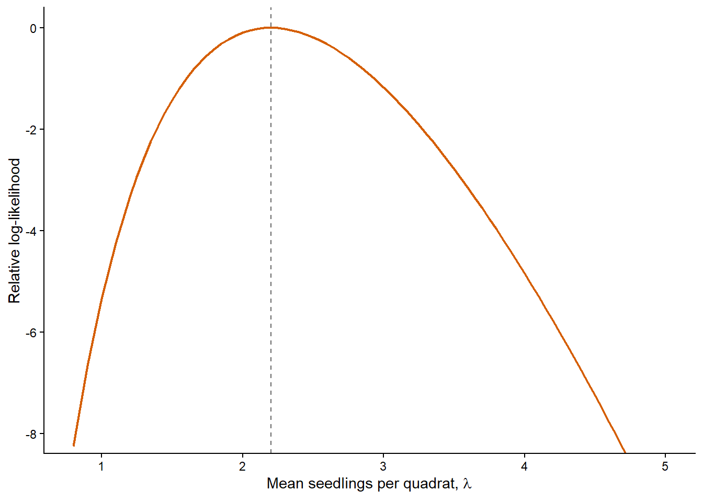
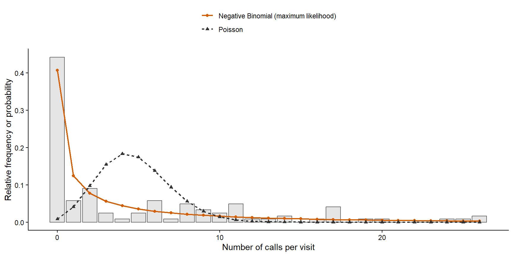
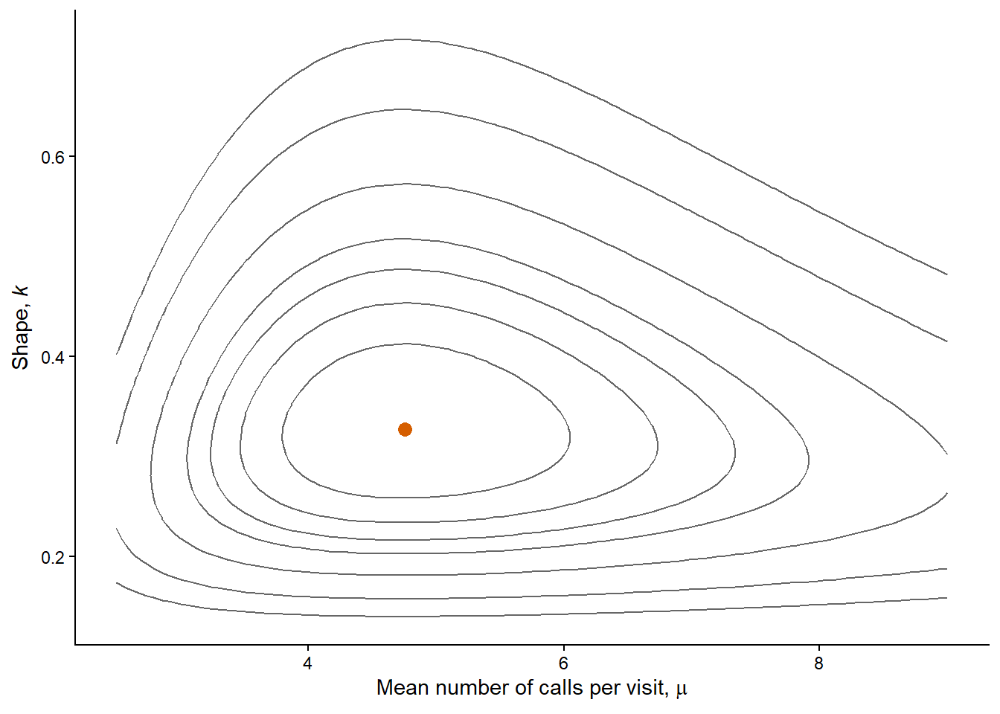
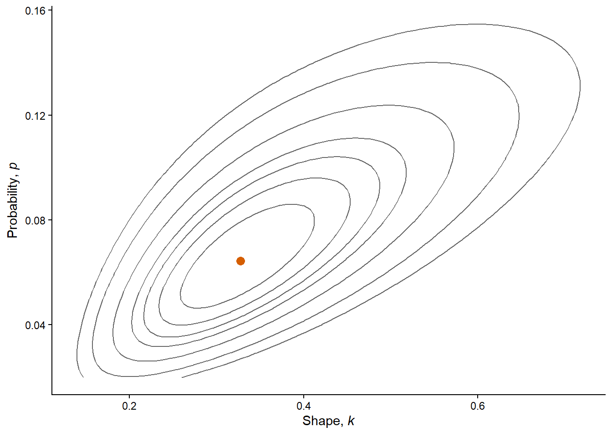
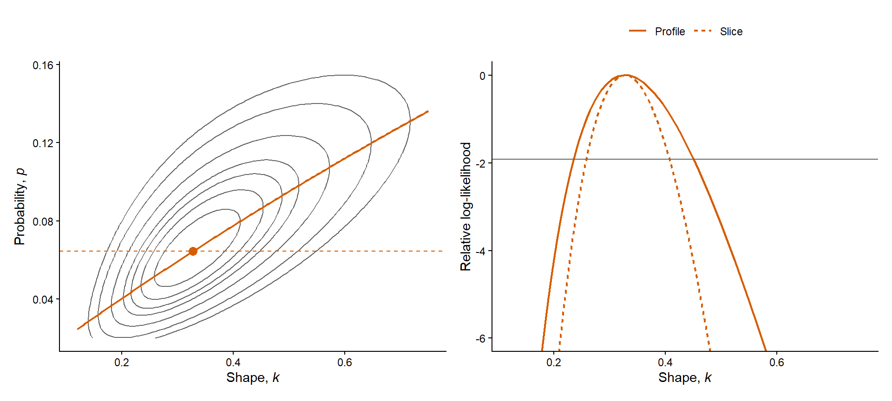
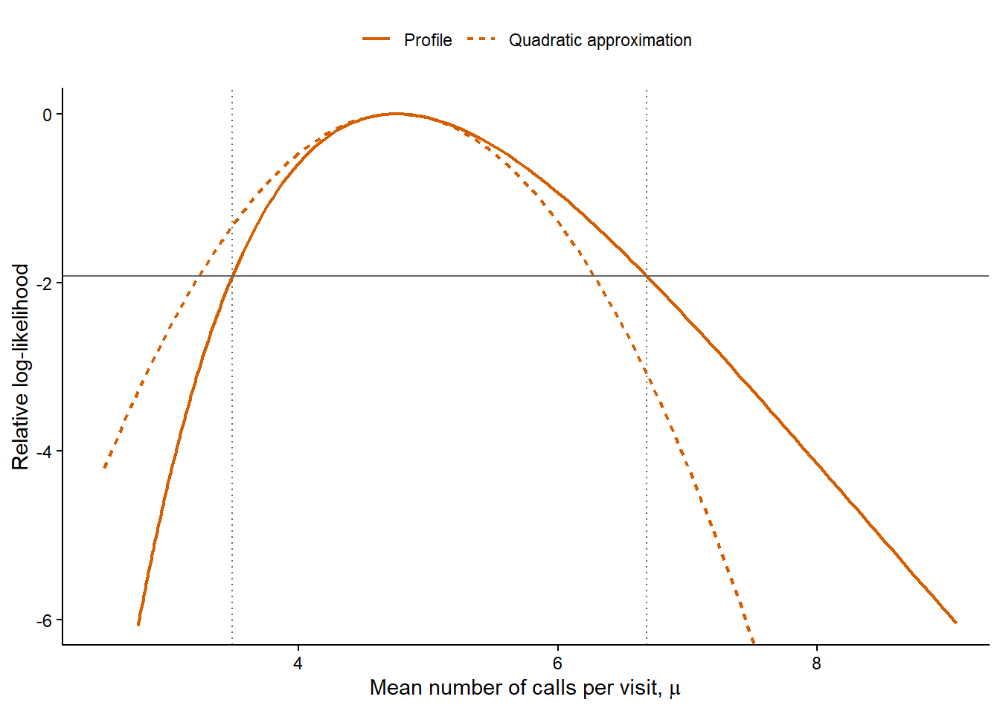
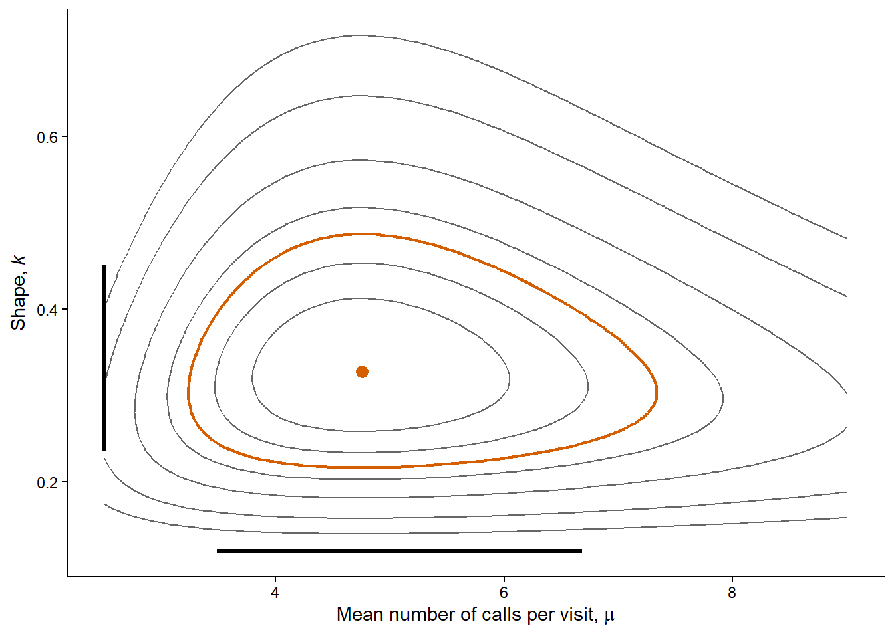
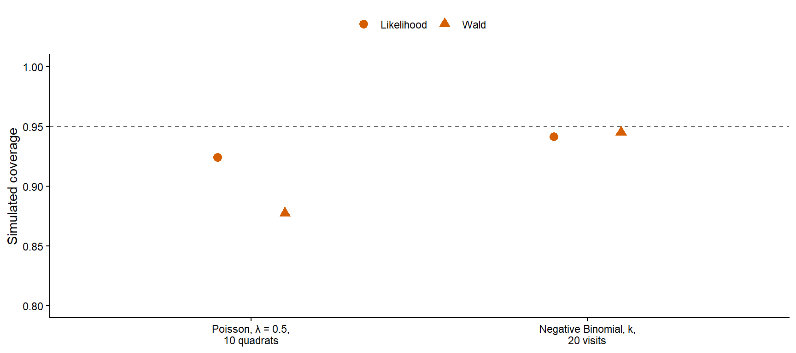
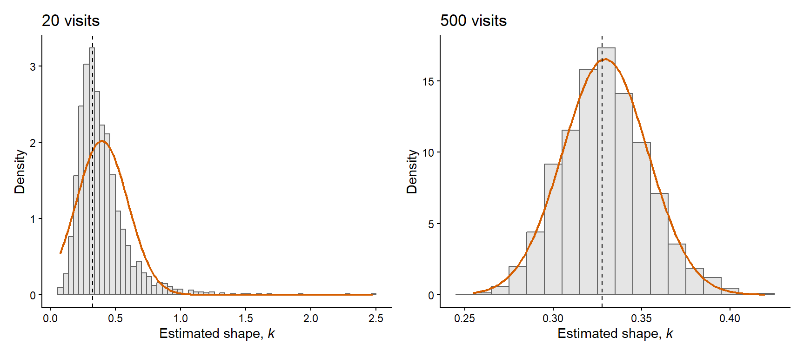

# Load RTMB first and RTMBdist second.
library(RTMB)
library(RTMBdist)
# Counts of balsam fir seedlings in 50 quadrats (see ?boot::fir), as in Chapter 3,
# and the number of quadrats.
data(fir, package = "boot")
seedling_counts = fir$count
n_quadrats = length(seedling_counts)Maximum likelihood estimation
1 Introduction
In this chapter, we learn how to estimate the parameters of a model and their uncertainty by maximum likelihood. In Chapter 3 we estimated parameters with the method of moments, which only uses the mean and the variance of a sample. Maximum likelihood uses the probability that the model assigns to every observation, and it applies to any model for which we can write a probability mass or density function. This is why it is the method of estimation in the rest of the course. The concepts of Chapter 3 (estimator, sampling distribution, standard error and confidence interval) remain the same; we now apply them to a different estimator.
The chapter uses two examples. The first is the counts of balsam fir seedlings in 50 quadrats of Chapter 3, under a Poisson model, so that we can compare every result with Chapter 3. Where the shape of the likelihood matters we also use the first ten of those quadrats, as a smaller sample from the same data. The second is the number of calls made by barn owl nestlings, the field data of the Chapter 3 practical (the data set Owls of the package glmmTMB), under a Negative Binomial model with two parameters. The chapter ends with the use of information criteria to compare different models fitted to the same data.
The chapter has two parts. The first part builds the method: the likelihood function, maximum likelihood estimation with optim() and the package RTMB, and models with several parameters. The second part is about what we can say once a model is fitted: the uncertainty of the estimates, the properties of maximum likelihood estimators and the comparison of models.
2 Learning goals
In this chapter, we will cover:
- the likelihood function and the log-likelihood;
- maximum likelihood estimation by numerical optimisation;
- constraints on parameters and transformations;
- likelihood surfaces, slices and profiles for models with several parameters;
- Fisher information, standard errors and Wald intervals;
- profile likelihood intervals and joint confidence regions;
- the properties of maximum likelihood estimators in large and small samples;
- the comparison of models with the Akaike information criterion.
We will use the Poisson and Negative Binomial distributions throughout the chapter. They are described in the Supplement. We write and fit the models with the packages RTMB and RTMBdist, whose distribution functions we have used since Chapter 2.
The table below is a roadmap of the chapter. Each row is one step, with the question that it answers, the R tools that we use for it and the example on which we show it.
| Step | Question it answers | In R | Example |
|---|---|---|---|
| Part 1 | |||
| The likelihood | How probable are the data for a given value of the parameter? | dpois(..., log = TRUE), sum() |
Fir seedlings |
| Estimation | Which value of the parameter makes the data most probable? | NLL with getAll(), cmb(), MakeADFun(), optim() |
Fir seedlings |
| Transformations | How do we keep a parameter within its range? | exp(), plogis() |
Fir seedlings |
| Several parameters | What does the likelihood look like, and what does it say about one parameter? | dnbinom2(), for loops with obj$fn(), contour(), profiles |
Owls |
| Part 2 | |||
| Standard errors | How precise is the estimate? | The Hessian by hand, then sdreport() and ADREPORT() |
Fir seedlings and owls |
| Confidence intervals | Which parameter values do the data support? | Wald interval on the fitted scale; profile with TMB::tmbprofile() and confint() |
Fir seedlings and owls |
| Properties | Why does the method work, and when does it fail? | Simulation with obj$simulate() |
Owls |
| Model comparison | Which of two models is better supported by the data? | AIC | Owls |
3 The likelihood function
The likelihood function is the joint probability of the observed sample, read as a function of the parameters of the model with the data held fixed. For continuous data it is the joint density of the sample. Let \(x_1,\ldots,x_n\) be the observations and assume that they are i.i.d. with a distribution that has a parameter \(\theta\) (as in Chapter 3, \(\theta\) stands for a parameter in general). The likelihood of \(\theta\) is
\[ L(\theta\mid x_1,\ldots,x_n) = P(X_1=x_1,\ldots,X_n=x_n\mid\theta) = \prod_{i=1}^{n}P(X_i=x_i\mid\theta), \]
where \(P(X_i=x_i\mid\theta)\) is the probability mass that the model assigns to the observation \(x_i\) when the parameter is \(\theta\),1 and the symbol \(\prod\) denotes a product over the \(n\) observations, in the same way as \(\sum\) denotes a sum. The second equality holds because the observations are independent, so their joint probability is the product of their individual probabilities (see Chapter 2, where we announced that the i.i.d. assumption would be fundamental for estimation). For continuous data we replace each probability mass by the density \(f_X(x_i\mid\theta)\).
This is the formula of a joint distribution from Chapter 2. What changes is what we hold fixed. In Chapter 2 we fixed the parameters and calculated the probability of different possible samples. Now the sample has been observed, so \(x_1,\ldots,x_n\) are fixed numbers, and we look at how the probability of that sample changes as we vary \(\theta\). A parameter value under which the observed sample is more probable is better supported by the data, that is the crucial idea behind likelihood.2 The likelihood is the basis of everything that follows in this book: the estimates, their confidence intervals and the comparison of models are all calculated from it.
Let’s illustrate it with the counts of balsam fir seedlings in 50 quadrats of Chapter 3, where \(X_i\) is the number of seedlings in quadrat \(i\) and \(X_i \sim \operatorname{Poisson}(\lambda)\). The probability mass function of the Poisson distribution is \(P(X_i=x_i\mid\lambda)=e^{-\lambda}\lambda^{x_i}/x_i!\). We start with a case that is small enough to do by hand, the counts of the first three quadrats (0, 1 and 2). Their likelihood is the product of three contributions (remember that \(0!=1\)):
\[ L(\lambda\mid 0,1,2) = \frac{e^{-\lambda}\lambda^{0}}{0!}\times \frac{e^{-\lambda}\lambda^{1}}{1!}\times \frac{e^{-\lambda}\lambda^{2}}{2!} = \frac{e^{-3\lambda}\lambda^{3}}{2}. \]
For \(\lambda=1\) this gives \(e^{-3}/2\approx 0.0249\) and for \(\lambda=2\) it gives \(e^{-6}\,2^{3}/2\approx 0.0099\).
To verify our maths with R, we first load the packages RTMB and RTMBdist and the counts of the 50 quadrats, as in Chapter 3:
dpois() returns the contribution of each of the three counts for a given value of \(\lambda\), and prod() multiplies them:
# The counts of the first three quadrats.
first_counts = seedling_counts[1:3]
first_counts[1] 0 1 2# Probability of each of the three counts at lambda = 1.
dpois(x = first_counts, lambda = 1)[1] 0.3678794 0.3678794 0.1839397# Likelihood of the three counts: prod() multiplies their probabilities.
prod(dpois(x = first_counts, lambda = 1))[1] 0.02489353prod(dpois(x = first_counts, lambda = 2))[1] 0.009915009The two products are the values that we calculated by hand. These three counts are about 2.5 times more probable under a mean of 1 than under a mean of 2 (their own mean is 1). The likelihood of the whole sample is calculated in the same way:
# Likelihood of all 50 counts at lambda = 1 and at lambda = 2.
prod(dpois(x = seedling_counts, lambda = 1))[1] 4.211184e-50prod(dpois(x = seedling_counts, lambda = 2))[1] 1.317922e-39With the 50 counts the order is reversed: the likelihood is approximately \(4.2\times10^{-50}\) for \(\lambda=1\) and \(1.3\times10^{-39}\) for \(\lambda=2\). That is, the whole sample is about \(3\times10^{10}\) times more probable under a mean of 2 than under a mean of 1, so 50 quadrats discriminate between these two values far more strongly than three. Note how small both numbers are. Every observation multiplies the likelihood by a probability smaller than one, so its value depends on the number of observations and has no meaning by itself. What we use is the comparison between the likelihoods of different parameter values for the same data.
A likelihood is calculated from probabilities but it is not a probability distribution for the parameter, for two reasons:
We work with aleatoric probability (Chapter 2): probabilities describe how the data or estimates vary across replications of the experiment, while the parameter of the model is a fixed quantity3. So in the model there is no variation or error about \(\lambda\) to which a probability could refer.
For a fixed \(\lambda\) the probabilities of all the possible samples add up to one, but nothing forces the likelihoods of all the possible values of \(\lambda\) to do so for a fixed sample. For the 50 counts, the area under the likelihood across all the possible values of \(\lambda\) is approximately \(8.7\times10^{-40}\), which is very far from one.
A likelihood is not the probability of a parameter value
The likelihood \(L(\theta\mid x_1,\ldots,x_n)\) is the probability (or density) of the observed data for a given value of the parameter, read as a function of the parameter. It does not add up or integrate to one over the values of the parameter, so it does not tell us how probable a parameter value is. We use it to compare parameter values: the data are better supported by the value with the higher likelihood.
3.1 The log-likelihood
The likelihood of 50 counts is already of the order of \(10^{-39}\). With a larger sample the product can become smaller than the smallest positive number that the computer can represent, and R then returns zero. For this reason, and because sums are easier to work with than products, we use the log-likelihood, the natural logarithm of the likelihood:
\[ \ell(\theta\mid x_1,\ldots,x_n) = \log L(\theta\mid x_1,\ldots,x_n) = \sum_{i=1}^{n}\log P(X_i=x_i\mid\theta). \]
The logarithm turns the product into a sum. It is an increasing function, so a parameter value with a higher likelihood also has a higher log-likelihood, and both functions have their maximum at the same value of \(\theta\). Once the data are fixed we will write \(L(\theta)\) and \(\ell(\theta)\) for short.
In R, all the d* functions have an argument log. With log = TRUE they return the logarithm of the probability mass (or density), which is more accurate than calculating the probability first and taking its logarithm afterwards. The log-likelihood is the sum of these values:
# Log-likelihood of the 50 counts at lambda = 2: sum the log probabilities,
# using the argument log = TRUE of dpois().
sum(dpois(x = seedling_counts, lambda = 2, log = TRUE))[1] -89.52476# The same number, from the logarithm of the product.
log(prod(dpois(x = seedling_counts, lambda = 2)))[1] -89.52476Both calculations give the same value. With 50 counts the product still works. To see when it fails, we simulate 1,000 counts from a Poisson model with \(\lambda=4\):
# Likelihood and log-likelihood of a large simulated sample of 1,000 counts at lambda = 4.
set.seed(seed = 501)
many_counts = rpois(n = 1000, lambda = 4)
# The product is smaller than the smallest positive number R can represent.
prod(dpois(x = many_counts, lambda = 4))[1] 0# The sum of log probabilities is an ordinary number.
sum(dpois(x = many_counts, lambda = 4, log = TRUE))[1] -2094.569R returns zero for the product, although none of the probabilities in it is zero, whereas the log-likelihood is an ordinary number. From here on we always work with log-likelihoods.
For continuous data the contributions to the likelihood are densities. Recall from Chapter 2 that a density has units (one over the unit of the measurement), that it changes with those units and that it can be larger than one. The log-likelihood inherits these properties: it can be positive, and its value changes if we express the same measurements in other units. For example, if body masses are converted from grams to kilograms, the density of every mass is multiplied by 1,000 (the same probability is spread over a thousand times fewer units), so the log-likelihood of \(n\) masses increases by \(n\log(1000)\). This shift is a constant, so the differences between the log-likelihoods of two parameter values, or of two models, are the same in both units. In general, the value of a log-likelihood means nothing by itself, and only differences between log-likelihoods calculated from the same data are meaningful. You will check this with measurements of body mass in the practical.
Practice: crab burrows
Three plots on a mudflat contain 3, 1 and 2 crab burrows. Assume that the counts are i.i.d. with a Poisson distribution. On paper, write the likelihood as a function of \(\lambda\) and calculate the likelihood and the log-likelihood for \(\lambda=2\) and for \(\lambda=3\) burrows per plot. Which of the two values is better supported by the data?
Solution
The likelihood is the product of the three contributions:
\[ L(\lambda\mid 3,1,2) = \frac{e^{-\lambda}\lambda^{3}}{3!}\times \frac{e^{-\lambda}\lambda^{1}}{1!}\times \frac{e^{-\lambda}\lambda^{2}}{2!} = \frac{e^{-3\lambda}\lambda^{6}}{12}. \]
For \(\lambda=2\) the likelihood is \(64e^{-6}/12\approx 0.0132\) and the log-likelihood is \(-6+\log(64/12)\approx -4.33\). For \(\lambda=3\) the likelihood is \(729e^{-9}/12\approx 0.0075\) and the log-likelihood is \(-9+\log(729/12)\approx -4.89\). The data are better supported by \(\lambda=2\), which is the mean of the three counts. The difference between the two log-likelihoods is 0.57, so the counts are about 1.8 times more probable (\(e^{0.57}\)) under \(\lambda=2\) than under \(\lambda=3\). In R:
# Log-likelihood of the three counts at lambda = 2 and at lambda = 3.
burrow_counts = c(3, 1, 2)
sum(dpois(x = burrow_counts, lambda = 2, log = TRUE))[1] -4.326024sum(dpois(x = burrow_counts, lambda = 3, log = TRUE))[1] -4.8932334 Maximum likelihood estimation
The maximum likelihood estimator (MLE) of a parameter is the value of the parameter for which the likelihood of the observed sample is highest:
\[ \hat\theta = \underset{\theta}{\arg\max}\;L(\theta\mid x_1,\ldots,x_n) = \underset{\theta}{\arg\max}\;\ell(\theta\mid x_1,\ldots,x_n), \]
where \(\arg\max\) reads “the value of \(\theta\) at which the function reaches its maximum”. That is, \(\max\) would give the height of the highest point and \(\arg\max\) gives its location. In plain English, the MLE is the parameter value under which the model assigns the highest probability to the data that we observed. As we saw in Chapter 3, the procedure of calculation is called estimator and the value that it returns for a given sample is the estimate; we use the abbreviation MLE for both.
For a few models the MLE can be written as a formula, and we start with one of them, the Poisson model. In general there is no such formula, and we find the maximum numerically, with an algorithm that searches for it. That is the method that we use in the rest of the book, because it works for any model for which we can write a likelihood.
At the highest point of the log-likelihood its slope is zero (if you need to refresh how a derivative is calculated, see the rules of differentiation of the calculus refresher). For i.i.d. Poisson counts, setting the derivative of the log-likelihood with respect to \(\lambda\) to zero and solving for \(\lambda\) gives
\[ \hat\lambda=\frac{1}{n}\sum_{i=1}^{n}x_i=\overline x. \]
So the MLE of \(\lambda\) is the mean of the sample, which is also the method-of-moments estimator of Chapter 3. For the 50 counts:
# The maximum likelihood estimate of the Poisson mean is the mean of the counts.
lambda_hat = mean(seedling_counts)
lambda_hat[1] 2.14The estimate is 2.14 seedlings per quadrat, as in Chapter 3. A solution that can be written as a formula, like this one, is called a closed-form solution, and it exists only for a few models.4 For the others, setting the derivatives to zero gives equations that cannot be solved with algebra.
4.1 The likelihood curve
A likelihood curve is the log-likelihood of a model with one parameter, drawn as a function of that parameter. It shows where the maximum is and how quickly the log-likelihood falls on either side of it, which is what we will use in Section 6 to calculate confidence intervals. To draw it, we calculate the log-likelihood for many values of the parameter. We plot the result as a relative log-likelihood, which is the difference between the log-likelihood and its maximum,
\[ \ell(\theta)-\ell(\hat\theta), \]
so that the curve is zero at the estimate and negative everywhere else. We draw all the likelihood figures of this chapter on this scale, because only differences in log-likelihood are meaningful.
We draw the curve for a smaller sample from the same data, the first ten quadrats, because the shape of a likelihood curve is easier to see when the sample is small (in Section 6 we compare what ten and 50 quadrats say about \(\lambda\)). From here on we say each time which of the two samples a result refers to. The ten quadrats contain 22 seedlings, so their estimate is 2.2 seedlings per quadrat:
# The counts of the first ten quadrats and their maximum likelihood estimate.
ten_counts = seedling_counts[1:10]
ten_counts [1] 0 1 2 3 4 3 4 2 2 1lambda_hat_ten = mean(ten_counts)
lambda_hat_ten[1] 2.2We define a grid of values of \(\lambda\) and fill a vector with the log-likelihood at each of them, using a for loop:
# Candidate values of lambda (seedlings per quadrat).
lambda_grid = seq(from = 0.8, to = 5, by = 0.05)
# Pre-allocate a vector for the log-likelihood and fill it with a loop over the grid.
loglik_grid = rep(NA, times = length(lambda_grid))
for (i in seq_along(lambda_grid)) {
loglik_grid[i] = sum(dpois(x = ten_counts, lambda = lambda_grid[i], log = TRUE))
}We then subtract the log-likelihood at the estimate from every value of the grid. We also calculate the relative log-likelihood at two values of \(\lambda\) that are one seedling away from the estimate, on either side of it:
# Relative log-likelihood: the difference from the log-likelihood at the estimate.
loglik_lambda_hat_ten = sum(dpois(x = ten_counts, lambda = lambda_hat_ten, log = TRUE))
relative_loglik = loglik_grid - loglik_lambda_hat_ten
# Relative log-likelihood at 1.2 and at 3.2 seedlings per quadrat.
sum(dpois(x = ten_counts, lambda = 1.2, log = TRUE)) - loglik_lambda_hat_ten[1] -3.334988sum(dpois(x = ten_counts, lambda = 3.2, log = TRUE)) - loglik_lambda_hat_ten[1] -1.756744The curve reaches its maximum at \(\hat\lambda=2.2\) seedlings per quadrat (Figure 1). Note that the curve is not symmetric: it falls more steeply to the left of the maximum than to the right. The relative log-likelihood is \(-3.33\) at \(\lambda=1.2\) and \(-1.76\) at \(\lambda=3.2\), so a mean of 3.2 is better supported by these data than a mean of 1.2, although both are one seedling away from the estimate. We come back to this asymmetry in Section 6.

A grid of values shows us the curve. To find its highest point for any model, with any number of parameters, we use an optimiser.
4.2 Numerical optimisation
An optimiser is an algorithm that searches for the parameter values at which a function reaches its minimum. It starts from values that we provide, evaluates the function, and moves step by step towards lower values until it cannot improve any further. In R we use the function optim(). Since it minimises, we do not give it the log-likelihood but the negative log-likelihood (NLL), \(-\ell(\theta)\): the parameter value with the lowest NLL is the one with the highest likelihood.
In this book every NLL is written in the same form, which the package RTMB needs. It is a function with two arguments, both of them named lists: the first holds the parameters (parms) and the second the data (data). Its first line calls getAll(), which makes the elements of both lists available by their names, so that the rest of the function reads like the model. For the Poisson model the list of parameters has one element, lambda, and the list of data has one element, counts:
# Negative log-likelihood of Poisson counts. The first argument holds the parameters
# and the second the data, both as named lists.
poisson_nll_lambda = function(parms, data) {
# Make the elements of both lists available by name.
getAll(parms, data)
-sum(dpois(x = counts, lambda = lambda, log = TRUE))
}Three steps take us from this function to the estimate. First, we connect the likelihood to a data set with a small helper function, cmb(), which takes an NLL and a list of data and returns the NLL of those data as a function of the parameters only. This way we can later calculate the same likelihood on other data, as long as the variables in the list have the same names.
# Connect a likelihood to a data set.
cmb = function(f, d) function(p) f(p, d)Second, MakeADFun() processes the NLL so that the tools that we use in the rest of the course can work with it (the details are explained progressively through the course). We give it the function returned by cmb() and a list with the starting value of every parameter, and it returns the object that the optimiser needs:
# Process the NLL of the 50 counts, with a starting value of 1 seedling per quadrat.
# silent = TRUE stops MakeADFun() from printing its progress.
fir_lambda_obj = MakeADFun(
cmb(poisson_nll_lambda, list(counts = seedling_counts)),
list(lambda = 1),
silent = TRUE
)We take three elements from this object that are passed to the optim() function:
par, the starting values as a vector;fn, the NLL as a function of that vector;- and
gr, the gradients of the NLL with respect to parameters (details on why we need it in Chapter 6 and Chapter 8).
# optim() minimises fn, starting from par and using the slope gr.
fir_lambda_fit = optim(
par = fir_lambda_obj$par,
fn = fir_lambda_obj$fn,
gr = fir_lambda_obj$gr,
method = "BFGS"
)The fourth argument (method) determines which specific algorithm is used for optimisation. We will use "BFGS" in most cases as it is quite efficient. optim() returns a list and its most relevant elements are
par, the value of the parameter at the minimum (i.e., the maximum likelihood estimate);value, the value of NLL at the maximum likelihood estimate;convergence, a code that is zero when the algorithm stopped normally, which is the first thing to check after every fit. If you get a value different from 0 that means something went wrong.
# Estimate, minimum of the negative log-likelihood, and convergence code (0 = normal stop).
fir_lambda_fit$par lambda
2.139995 fir_lambda_fit$value[1] 89.28529fir_lambda_fit$convergence[1] 04.3 Constraints and transformations
A constraint is a restriction on the values that a parameter can take. The mean \(\lambda\) of a Poisson distribution must be positive, and a probability must lie between zero and one. An optimiser such as BFGS does not know about these restrictions. It can try any real number, and for a negative \(\lambda\) the function dpois() returns NaN (not a number). In the fit above the search stayed among positive values, but that is not guaranteed. In this book we deal with constraints by transforming the parameter: the optimiser works with a quantity that can take any real value, and the NLL function converts it into the parameter of the model.
For a positive parameter we use the logarithm. The optimiser searches over \(\log\lambda\), which can be any real number, and inside the function exp() turns it into a positive mean:
# Negative log-likelihood on the log scale: log_lambda can take any real value
# and exp() turns it into a positive mean.
poisson_nll = function(parms, data) {
getAll(parms, data)
# Transform the parameter to the original scale.
lambda = exp(log_lambda)
-sum(dpois(x = counts, lambda = lambda, log = TRUE))
}The steps of the fit are the same as before. The parameter in the list of starting values is now log_lambda, so the search starts at \(\log 1=0\):
# Process the NLL of the 50 counts, starting from log(1).
fir_obj = MakeADFun(
cmb(poisson_nll, list(counts = seedling_counts)),
list(log_lambda = log(1)),
silent = TRUE
)
# Fit and check the convergence code.
fir_fit = optim(par = fir_obj$par, fn = fir_obj$fn, gr = fir_obj$gr, method = "BFGS")
fir_fit$convergence[1] 0The element par of the fit is the estimate of \(\log\lambda\), the quantity that the optimiser searched over. We transform it back with exp() to report it in seedlings per quadrat (unname() drops the name log_lambda, which no longer describes the value):
# Estimate on the log scale and transformed back to seedlings per quadrat.
fir_fit$parlog_lambda
0.7608058 lambda_mle = unname(exp(fir_fit$par))
lambda_mle[1] 2.14On the original scale the estimate is again 2.14 seedlings per quadrat.
The same NLL can be connected to another data set, as long as its list uses the same name, counts. For the first ten quadrats, only the list of data changes:
# The same likelihood connected to the counts of the first ten quadrats.
fir_ten_obj = MakeADFun(
cmb(poisson_nll, list(counts = ten_counts)),
list(log_lambda = log(1)),
silent = TRUE
)
fir_ten_fit = optim(
par = fir_ten_obj$par,
fn = fir_ten_obj$fn,
gr = fir_ten_obj$gr,
method = "BFGS"
)
fir_ten_fit$convergence[1] 0# Estimate in seedlings per quadrat.
unname(exp(fir_ten_fit$par))[1] 2.2The estimate is 2.2 seedlings per quadrat, the mean of the ten counts. We will use both objects again in Section 6.
For a probability \(p\) the corresponding transformation is the logit, \(\operatorname{logit}(p)=\log\left[p/(1-p)\right]\), which covers all the real numbers as \(p\) goes from zero to one. In R, qlogis() calculates the logit and plogis() its inverse, which turns any real number into a value between zero and one (the names come from the logistic distribution, of which they are the quantile and cumulative probability functions):
# The logit transformation for a probability, and its inverse.
qlogis(p = 0.25)[1] -1.098612plogis(q = qlogis(p = 0.25))[1] 0.25The logit of 0.25 is a negative number, and plogis() returns the 0.25 that we started with. We will use this transformation in Section 5.
Fitting on a transformed scale and reporting on the original scale relies on a property of maximum likelihood called invariance: the MLE of a function of a parameter is that function of the MLE.6 That is, for a function \(g\) of the parameter,
\[ \widehat{g(\theta)}=g(\hat\theta). \]
Here the optimiser found the MLE of \(\log\lambda\), and invariance tells us that its exponential is the MLE of \(\lambda\). The reason is that the transformation only relabels the horizontal axis of the likelihood curve. Every value of \(\log\lambda\) corresponds to one value of \(\lambda\) with the same likelihood, so the highest point is the same on both scales.
Invariance also gives us the MLE of other quantities that are calculated from the parameter. For example, under the Poisson model the probability that a quadrat has no seedlings is \(P(X=0\mid\lambda)=e^{-\lambda}\), and its MLE is \(e^{-\hat\lambda}\):
# By invariance, the estimate of the probability of an empty quadrat, exp(-lambda),
# is calculated from the estimate of lambda.
exp(-lambda_mle)[1] 0.1176549That is, we estimate that approximately 12% of the quadrats are empty (in the sample, 7 of the 50 quadrats have no seedlings). Chapter 3 used this same quantity as an example of a biased estimator: \(\hat\lambda\) is an unbiased estimator of \(\lambda\), but \(e^{-\hat\lambda}\) is a biased estimator of \(e^{-\lambda}\). So invariance carries over the estimate, but it does not carry over unbiasedness.
When a fit fails
Check the element convergence after every fit. A code other than zero means that the search did not finish normally, and the values in par are then not estimates.
While it searches, optim() can try parameter values for which the NLL cannot be calculated, and fn then returns NaN without a warning. BFGS treats such a value as a failed step and tries a shorter one, so this is harmless when the search ends with convergence code 0 and the estimates are sensible. When the NLL is NaN at the starting values, optim() stops with the error “initial value in ‘vmmin’ is not finite”.
If a fit fails, check first that every constrained parameter is transformed inside the NLL. Then try other starting values (the method-of-moments estimates are a good choice), look at the data, and calculate the NLL at the starting values, for example with fir_obj$fn(fir_obj$par), to see whether it returns an ordinary number. Chapter 8 explains why optimisers fail and what else can be done.
Practice: back to the ecological scale
A colleague fits two models with optim(). In the first, the parameter is the logarithm of the mean number of ticks per lizard and the result is par = 0.92. In the second, the parameter is the logit of the probability that a seed germinates and the result is par = -0.85. Report both estimates on the ecological scale. Are they the maximum likelihood estimates of the mean and of the probability?
Solution
We apply the inverse of each transformation:
# Inverse of the logarithm and inverse of the logit.
exp(0.92)[1] 2.50929plogis(q = -0.85)[1] 0.2994329The estimates are approximately 2.5 ticks per lizard and a germination probability of 0.30. By invariance, they are the maximum likelihood estimates of the mean and of the probability, because the optimiser found the maximum likelihood estimates of their logarithm and logit.
5 Models with several parameters
With several parameters the likelihood is a function of all of them jointly, and the MLE is the combination of values with the highest likelihood. The definitions of the previous sections do not change, but the likelihood is now a surface over the parameters instead of a curve. This raises questions that did not exist with one parameter: how to look at the surface, how the estimates of the different parameters depend on each other, and how to describe what the data say about one of them. These questions matter for the rest of the book, because the models of Chapters 6 and 7 always have several parameters.
We will use the barn owl data of the Chapter 3 practical to illustrate these concepts. The data set Owls in the package glmmTMB contains observations of barn owl nests (Roulin and Bersier 2007). For each visit of a parent to a nest, the variable SiblingNegotiation is the number of calls made by the nestlings. As in that practical, we keep the visits of the female parent to nests where the nestlings had been fed (Satiated), so that all counts can reasonably share one mean:
# Load the Owls data from the glmmTMB package without attaching the package.
data(Owls, package = "glmmTMB")
# Keep the visits of the female parent to nests with satiated nestlings.
satiated_female = Owls[Owls$FoodTreatment == "Satiated" & Owls$SexParent == "Female", ]
# Number of calls at each of these visits, and the number of visits.
call_counts = satiated_female$SiblingNegotiation
n_visits = length(call_counts)We also calculate the mean and the variance of the counts and, from them, the method-of-moments estimate of the shape of a Negative Binomial distribution (the model is introduced below):
# Method-of-moments estimates, as in the practical of Chapter 3.
mu_hat = mean(call_counts)
variance_hat = mean((call_counts - mu_hat)^2)
k_mom = mu_hat^2 / (variance_hat - mu_hat)
c(n_visits = n_visits, mu_hat = mu_hat, variance_hat = variance_hat, k_mom = k_mom) n_visits mu_hat variance_hat k_mom
122.0000000 4.7540984 42.3493684 0.6011781 There are 122 visits, with a mean of 4.75 calls per visit and a variance of 42.3, almost nine times the mean. Let \(X_i\) be the number of calls at visit \(i\). Because of this overdispersion we use a Negative Binomial model with mean \(\mu\) and shape \(k\),
\[ X_i \sim \operatorname{NegBin}(\mu, k), \qquad \operatorname{Var}(X_i)=\mu+\frac{\mu^2}{k}, \]
and we assume that the visits are i.i.d. (a simplification to which we return in Section 7.5). The method of moments gives \(\hat\mu=\overline x\approx 4.75\) calls per visit and \(\hat k_{\mathrm{MM}}=\hat\mu^2/(\hat\sigma^2-\hat\mu)\approx 0.60\), where \(\hat\sigma^2\) is the variance of the sample with divisor \(n\) and the subscript marks the method-of-moments estimate, as in Chapter 3.
The NLL is written as before. The list of parameters now has two elements, log_mu and log_k (both parameters are positive, so we use the logarithm for both), and the list of data has one, calls. For the probability mass we use dnbinom2() of the package RTMBdist, which is written in terms of the mean (mu) and the shape (size):
# Negative log-likelihood of the Negative Binomial model with mean mu and shape k.
nb_nll = function(parms, data) {
getAll(parms, data)
# Transform the parameters to the original scale.
mu = exp(log_mu)
k = exp(log_k)
-sum(dnbinom2(x = calls, mu = mu, size = k, log = TRUE))
}
Two functions called
dnbinom2()
The packages RTMB and RTMBdist both have a function called dnbinom2(), with different arguments: in RTMBdist they are the mean and the shape (mu and size), and in RTMB the mean and the variance (mu and var). R uses the function of the package that was attached last, which is RTMBdist when we load library(RTMB) first and library(RTMBdist) second, as at the start of this chapter. So always load both packages in that order and name the arguments mu and size. If only RTMB is loaded, R stops with an error about an unused argument size.
The optimiser needs a starting value for each parameter. The method-of-moments estimates are a sensible choice: they are quick to calculate and, being estimates of the same parameters, they should not be far from the maximum. We give them to MakeADFun() in a list with the names that the NLL uses, and optim() keeps those names in its result:
# Process the NLL of the owl counts, starting from the method-of-moments estimates
# on the log scale.
owl_obj = MakeADFun(
cmb(nb_nll, list(calls = call_counts)),
list(log_mu = log(mu_hat), log_k = log(k_mom)),
silent = TRUE
)
# Fit the model and check the convergence code.
owl_fit = optim(par = owl_obj$par, fn = owl_obj$fn, gr = owl_obj$gr, method = "BFGS")
owl_fit$convergence[1] 0The element par of the fit is now a vector with two named elements, log_mu and log_k. We select each of them by its name and transform it back with exp():
# Maximum likelihood estimates on the original scale.
mu_mle = unname(exp(owl_fit$par["log_mu"]))
k_mle = unname(exp(owl_fit$par["log_k"]))
c(mu_mle = mu_mle, k_mle = k_mle) mu_mle k_mle
4.7540983 0.3274532 The estimate of the mean is \(\hat\mu\approx 4.75\) calls per visit, which is the mean of the sample: for a Negative Binomial model the MLE of the mean is the mean of the sample, whatever the value of \(k\). The estimate of the shape is \(\hat k\approx 0.33\), far from the method-of-moments estimate of 0.60 at which the search started. We return to the difference between the two estimates in Section 7.5.
5.1 The fitted model
optim() returns estimates for any model that we give it, so after a fit we check whether the fitted model describes the data. For counts we can compare the relative frequency of each count in the sample with the probability that the fitted model assigns to it. As a reference we add a Poisson model with the same mean, which is the model that we would use if there were no overdispersion (its MLE is the mean of the sample, as we saw in Section 4). As a specific check, we calculate the fraction of visits without calls in the sample and the probability that each fitted model assigns to a count of zero:
# Fraction of visits without calls: observed, and under each fitted model.
c(
observed = mean(call_counts == 0),
nb_mle = dnbinom2(x = 0, mu = mu_mle, size = k_mle),
poisson = dpois(x = 0, lambda = mu_hat)
) observed nb_mle poisson
0.44262295 0.40743025 0.00861631 The visits without calls are 44% of the sample (54 of 122). The fitted Negative Binomial model assigns a probability of 0.41 to a count of zero, whereas under the Poisson model a visit without calls would be very rare (a probability of 0.009). The log-likelihoods of the two models compare them on the whole sample. The element value of a fit is the NLL at the estimates, so the maximum log-likelihood of the Negative Binomial model is minus that value:
# Log-likelihood at the maximum likelihood estimates and for a Poisson model with the
# sample mean.
loglik_mle = -owl_fit$value
loglik_poisson = sum(dpois(x = call_counts, lambda = mu_hat, log = TRUE))
c(mle = loglik_mle, poisson = loglik_poisson) mle poisson
-299.4419 -634.1646 The log-likelihood of the Negative Binomial model is about 335 units higher than that of the Poisson model. Figure 2 shows the two fitted distributions with the relative frequencies of the sample. The Negative Binomial model reproduces the high frequency of visits without calls and spreads the rest of its probability over a wide range of counts, whereas the Poisson model concentrates its probability around the mean. We compare the two models with a formal criterion in Section 8, and we return in Section 7.5 to what the Negative Binomial model does not describe well.

5.2 The likelihood surface
With two parameters we can still evaluate the log-likelihood on a grid, which now has two dimensions: one for the values of \(\mu\) and one for the values of \(k\). We store the results in a matrix with one row per value of \(\mu\) and one column per value of \(k\), and fill it with two nested for loops. Inside the loops we call owl_obj$fn(), which returns the NLL for a vector of parameters on the scale that was optimised. So we give it the logarithms of the candidate values and change the sign of the result:
# Grids of candidate values for the mean (calls per visit) and the shape.
mu_grid = seq(from = 2.5, to = 9, length.out = 91)
k_grid = seq(from = 0.12, to = 0.75, length.out = 91)
# Pre-allocate a matrix and fill it with two nested loops: row i for the i-th mean
# and column j for the j-th shape. fn() takes log(mu) and log(k) and returns the NLL.
loglik_surface = matrix(NA, nrow = length(mu_grid), ncol = length(k_grid))
for (i in seq_along(mu_grid)) {
for (j in seq_along(k_grid)) {
loglik_surface[i, j] = -owl_obj$fn(c(log(mu_grid[i]), log(k_grid[j])))
}
}
# Relative log-likelihood: the difference from the maximum found by optim().
relative_surface = loglik_surface - loglik_mleA matrix like this one can be drawn with contour(), as we did in the Chapter 1 practical:
# The matrix can be drawn with contour(), as in the practical of Chapter 1.
contour(x = mu_grid, y = k_grid, z = relative_surface, levels = c(-6, -4, -3, -2, -1))Figure 3 shows the same contours. Each line joins the combinations of \(\mu\) and \(k\) that have the same relative log-likelihood, like the contours of the joint density in Chapter 2, and the MLE is at the top of the hill. The contours are not tilted: the value of \(\mu\) with the highest log-likelihood is the same for every value of \(k\) (the mean of the sample), and the best value of \(k\) hardly changes with \(\mu\). The surface is not symmetric, however, as it falls more slowly towards large values of \(\mu\) and of \(k\) than towards small ones.

5.3 Parameterisation and the shape of the surface
The same model can be written with different sets of parameters, each of which is called a parameterisation. For the Negative Binomial distribution, R’s own parameters are the shape \(k\) (size) and a probability \(p\) (prob), which is related to the mean through \(p=k/(k+\mu)\) (the “Inverse” line of the supplement entry).
I fitted the same model to the owl data in these parameters, with \(\log k\) and \(\operatorname{logit}p\) as the transformed parameters, and calculated the log-likelihood on a grid of values of \(k\) and \(p\) (the code repeats the steps above with the arguments size and prob of dnbinom(), so it is not shown). The maximum log-likelihood is \(-299.44\), the same as before, and so is \(\hat k\approx 0.33\). The estimate of the probability is \(\hat p\approx 0.064\), which is the value of \(\hat k/(\hat k+\hat\mu)\) from the first fit, as invariance says (the two numbers differ in the fifth decimal because optim() always has a bit of numerical error, nothing to really worry about). It is the same model at the same maximum. What changes is the shape of the surface around the maximum (Figure 4).

The contours are now tilted: a larger \(k\) goes with a larger \(p\). In these parameters the mean of the distribution is \(k(1-p)/p\), and the data determine the mean number of calls well. So a higher value of \(k\) can be compensated by a higher value of \(p\) that keeps the mean close to 4.75, with little loss of likelihood. Tilted contours describe two parameters whose estimates depend on each other, which has consequences for slices and profiles (below) and for the uncertainty of the estimates (Section 6).
This book writes distributions in terms of their mean where possible, because we normally model the effect of covariates on the mean (see the Supplement). For the Negative Binomial distribution that parameterisation also gives estimates that hardly depend on each other, as Figure 3 showed. The choice of parameters also matters for numerical optimisation, which is a topic of Chapter 8.
5.4 Slices and profiles
A surface can only be drawn for two parameters, and even then we usually want to know what the data say about one parameter at a time. There are two ways of reducing a likelihood surface to a curve for one parameter, and they answer different questions.
A likelihood slice fixes the other parameters at one value, normally their estimates, and varies the parameter of interest. For the shape \(k\) in the parameters \(k\) and \(p\), the slice is \(\ell(k,\hat p)\), a cut through the surface along a straight line.
A profile likelihood re-estimates the other parameters for every value of the parameter of interest:
\[ \ell_{\mathrm{prof}}(k)=\max_{p}\,\ell(k,p). \]
That is, for each value of \(k\) we find the value of \(p\) that maximises the log-likelihood with \(k\) held fixed, and we record that maximum. The parameters that are re-estimated are called nuisance parameters: they are needed to define the model, but they are not the parameter that the question is about. Which parameter is of interest and which is a nuisance depends on the question, and we will profile each parameter in turn.
We calculate both curves on a grid of values of \(k\): the slice evaluates the log-likelihood with \(p\) fixed at \(\hat p\), and the profile runs optim() at each value of \(k\) to re-estimate \(p\) (the code of a profile is shown in Section 6.3, where we need it to calculate confidence intervals).

Figure 5 shows why the two curves differ. In the left panel, the slice follows the horizontal line at \(\hat p\), which leaves the high part of the surface quickly because the contours are tilted. The profile follows the ridge of the surface: for each \(k\) it moves to the best \(p\). Both pass through the MLE, and everywhere else the profile is higher than the slice, since it is the maximum over all the values of \(p\) (right panel). The slice is therefore narrower: the values of \(k\) within 1.92 units of the maximum, a cutoff that we justify in Section 6.3, go from 0.26 to 0.41 for the slice and from 0.24 to 0.45 for the profile. The slice describes what the data would say about \(k\) if we knew that \(p\) is exactly 0.064, whereas the profile takes into account that \(p\) is estimated from the same data.
How much the two curves differ depends on the parameterisation. With the mean as the second parameter, the slice and the profile of \(k\) coincide, because the best \(\mu\) is the mean of the sample for every value of \(k\). The profile itself does not depend on how the nuisance parameter is written: maximising over \(p\) or over \(\mu\) gives the same curve for \(k\). A slice does depend on it.
We will use profiles to calculate confidence intervals (Section 6.3). Slices need no optimisation, so they are a quick way to inspect a fitted model, and they return as a diagnostic in Chapter 8.
Explore a likelihood surface
Kristoffer Magnusson’s interactive page on maximum likelihood lets you do by hand what an optimiser does. It uses a Normal model with two parameters, a mean and a variance, and a sample of ten observations. In the part “Likelihood Calculation”, move the sliders of the mean and the variance and watch how the contribution of each observation and the log-likelihood change. In “Finding the Maximum Likelihood Estimates”, follow how an algorithm climbs the log-likelihood step by step. The last part of the page is about hypothesis tests, which we do not use in this course.
6 Uncertainty from the likelihood
In Chapter 3 we reported the uncertainty of an estimate with a standard error and a confidence interval, and for the mean of Poisson counts we had a formula for the standard error. For most models there is no such formula. In this section we calculate standard errors and confidence intervals from the likelihood itself, which we can do for any model that we fit with optim().
A confidence interval for a parameter can be calculated from a likelihood in two ways. The Wald interval uses the asymptotic normality of the MLE and the curvature of the log-likelihood at its maximum, which gives the standard error. The profile likelihood interval uses the whole shape of the log-likelihood around the maximum. In this book the profile likelihood interval is the better method in general, but the Wald interval is the fast approximation that software usually reports. This section explains both, shows when they differ and checks their coverage by simulation. The Wald interval relies on a result for large samples that we state below and use straight away. In Section 7 we then examine that result by simulation, together with the other properties of maximum likelihood estimators.
6.1 Standard errors and Wald intervals
The standard error of an MLE follows from a result for large samples. Chapter 3 ended with the central limit theorem: the mean of \(n\) i.i.d. observations is asymptotically normal. It also announced that this chapter would generalise the result to other parameters. The generalisation is that the MLE of any parameter is asymptotically normal: as the sample grows, its sampling distribution approaches a Normal distribution centred on the parameter.7 For one parameter:
\[ \hat\theta \overset{\mathrm{approx}}{\sim} \operatorname{Normal}\left(\theta,\frac{1}{\mathcal I(\theta)}\right) \quad\text{for sufficiently large }n, \]
where \(\mathcal I(\theta)\) is the Fisher information that the sample contains about \(\theta\). In plain English, across hypothetical experiments with a large sample8 the estimates fall around the parameter in the shape of a bell (the shape of a Normal distribution), and the more information the sample contains, the narrower the bell.
Asymptotic normality of maximum likelihood estimators
For a large sample of i.i.d. observations from the model, the sampling distribution of a maximum likelihood estimator is approximately Normal, centred on the parameter, with a variance equal to the inverse of the Fisher information. The observed information (minus the second derivative of the log-likelihood at the estimate) estimates it from the sample.
We build the Wald interval in four steps, which are the subsections below. We first calculate the information and the standard error for a model with one parameter, where everything can be done by hand (“Fisher information”). We then generalise the calculation to several parameters with the Hessian matrix (“The Hessian matrix”). Because the fits of this chapter search for unconstrained parameters, we next see how the standard error and the interval change when a parameter is transformed (“Constrained and unconstrained parameters”). Finally, we let TMB do all these calculations (“Automation with TMB”).
6.1.1 Fisher information
The information measures how sharply the log-likelihood is curved around its maximum. We calculate it from our sample as the observed information, which is the negative of the second derivative of the log-likelihood at the estimate,9 and from it we obtain an estimate of the variance and of the standard error of the estimator:
\[ \hat{\mathcal I}=-\ell''(\hat\theta), \qquad \widehat{\operatorname{Var}}(\hat\theta)=\frac{1}{\hat{\mathcal I}}, \qquad \widehat{\operatorname{SE}}(\hat\theta)=\frac{1}{\sqrt{\hat{\mathcal I}}}. \]
The second derivative measures how fast the slope of a curve changes. At a maximum it is negative, and the more negative it is, the faster the log-likelihood falls as we move away from the estimate. A sharply curved log-likelihood therefore means that the data discriminate well among parameter values, which corresponds to a small variance of the estimator. A flat log-likelihood means that many parameter values are almost equally well supported, which corresponds to a large variance.
For the Poisson model we can do the calculation by hand. The second derivative of its log-likelihood with respect to \(\lambda\) is \(\ell''(\lambda)=-\sum x_i/\lambda^2\) (the derivation is in the box of Section 4). At \(\hat\lambda=\overline x\) the sum of the counts is \(n\hat\lambda\), so the observed information is \(n/\hat\lambda\). We do the calculation for the ten quadrats of Figure 1, where \(\hat\lambda=2.2\), and keep this small sample until we have calculated the three intervals of this section. At the end of Section 6.3 we repeat them for the 50 quadrats.
\[ \hat{\mathcal I}=\frac{n\hat\lambda}{\hat\lambda^2}=\frac{n}{\hat\lambda}=\frac{10}{2.2}\approx 4.55, \qquad \widehat{\operatorname{Var}}(\hat\lambda)=\frac{\hat\lambda}{n}=0.22, \qquad \widehat{\operatorname{SE}}(\hat\lambda)=\sqrt{0.22}\approx 0.47. \]
The result, \(\sqrt{\hat\lambda/n}\), is exactly the formula of the plug-in standard error that we obtained in Chapter 3 from the variance of a mean. Maximum likelihood gives it to us from the curvature of the log-likelihood, which we can calculate for any model, also when there is no formula for the variance of the estimator. We can verify our maths with R:
# Observed information of the Poisson model at the estimate, for the ten quadrats:
# -l''(lambda_hat) = sum(x) / lambda_hat^2, which equals n / lambda_hat at lambda_hat = mean(x).
observed_information = sum(ten_counts) / lambda_hat_ten^2
observed_information[1] 4.545455# Approximate variance of the estimator and its standard error (seedlings per quadrat).
approximate_variance = 1 / observed_information
standard_error = sqrt(approximate_variance)
c(approximate_variance = approximate_variance, standard_error = standard_error)approximate_variance standard_error
0.2200000 0.4690416 The same formula gives the standard error for all 50 quadrats:
# The same standard error for all 50 quadrats: the value of Chapter 3.
sqrt(lambda_hat / n_quadrats)[1] 0.2068816With all 50 quadrats the standard error is 0.207 seedlings per quadrat, the value that we calculated in Chapter 3. With ten quadrats it is more than twice as large (0.47), because the sample contains about five times less information.
In Chapter 3 we defined the Wald interval10 as \(\hat\theta\pm z_{0.975}\,\widehat{\operatorname{SE}}(\hat\theta)\) and justified it with the approximate normality of the estimator. For an MLE the standard error comes from the observed information, as we have just seen. For the ten quadrats we calculated it by hand, \(\widehat{\operatorname{SE}}(\hat\lambda)=\sqrt{\hat\lambda/n}\approx 0.47\), so the interval is:
# Wald interval for the Poisson mean of the ten quadrats, on the original scale.
critical_value = qnorm(p = 0.975)
wald_original = lambda_hat_ten + c(-1, 1) * critical_value * standard_error
wald_original[1] 1.280695 3.119305That is, 1.28 to 3.12 seedlings per quadrat. This interval is symmetric around the estimate and it is calculated on the original scale of the parameter, with the standard error of \(\hat\lambda\).
6.1.2 The Hessian matrix
With several parameters, the information is a matrix that contains the second derivatives of the log-likelihood with respect to every pair of parameters. The matrix of second derivatives of a function is called its Hessian. The Hessian of the NLL at the estimates is the observed information matrix, and its inverse approximates the variances of the estimates (on its diagonal) and the covariances between them (outside the diagonal). We use it first for the Poisson model and then for the owl model.
We do not need to derive the second derivatives by hand. With hessian = TRUE, optim() also returns the Hessian of the function that it minimised, calculated numerically at the estimate. It is the Hessian with respect to the parameter that optim() searched over, which in our fit is \(\log\lambda\) (see Section 4.3). So the standard error that we obtain from it is the standard error of the estimate of \(\log\lambda\):
# Fit the Poisson model to the ten quadrats again, now asking for the Hessian.
fir_ten_fit = optim(
par = fir_ten_obj$par, fn = fir_ten_obj$fn, gr = fir_ten_obj$gr,
method = "BFGS", hessian = TRUE
)
# The Hessian is a 1 by 1 matrix; take its single element. Its inverse is the
# approximate variance of the estimate of log(lambda).
hessian_log = fir_ten_fit$hessian[1, 1]
se_log_lambda = sqrt(1 / hessian_log)
c(hessian_log = hessian_log, se_log_lambda = se_log_lambda) hessian_log se_log_lambda
22.0000025 0.2132007 A fit with one parameter returns a matrix with one row and one column, from which we take the single element. The Hessian is 22 (you can check that the second derivative of the NLL with respect to \(\log\lambda\) is \(n\lambda\), which at the estimate is the total number of seedlings) and the standard error of the estimate of \(\log\lambda\) is \(1/\sqrt{22}\approx 0.213\).
The owl model has two parameters, so its Hessian is a matrix with two rows and two columns, and we need its inverse, which approximates the covariance matrix of the estimates of \(\log\mu\) and \(\log k\). We fit the model of the previous section again, now asking optim() for the Hessian. The model is the same, so the estimates do not change:
# Fit the owl model again, now asking optim() for the Hessian.
owl_fit = optim(
par = owl_obj$par, fn = owl_obj$fn, gr = owl_obj$gr,
method = "BFGS", hessian = TRUE
)Three functions take us from the Hessian to the standard errors:
solve()applied to a matrix returns its inverse (matrices were introduced in the Chapter 1 practical);diag()extracts the diagonal of a matrix, which here holds the variances of the two estimates;sqrt()turns the variances into standard errors.
# Invert the Hessian, take the variances from its diagonal and their square roots.
owl_covariance = solve(owl_fit$hessian)
sqrt(diag(owl_covariance)) log_mu log_k
0.1635722 0.1654527 These are the standard errors of the estimates of \(\log\mu\) and \(\log k\), which are the parameters that optim() searched over, and not of \(\mu\) and \(k\) themselves. We now look at why that matters.
6.1.3 Constrained and unconstrained parameters
Both the mean \(\lambda\) of the Poisson model and the shape \(k\) of the Negative Binomial model are constrained to be positive, and in Section 4.3 we removed the constraint by fitting their logarithms, which can take any real value. The Hessian that we have just used belongs to the unconstrained parameter. For the ten quadrats we therefore have two standard errors, one for the estimator \(\hat\lambda\) (calculated by hand, in seedlings per quadrat) and one for the estimator of \(\log\lambda\) (from the Hessian). The second is approximately the first one divided by the estimate, that is, the standard error relative to the size of the estimate (\(0.47/2.2\approx 0.213\)). We compare them with two ways of moving the second one back to the original scale:
c(
# By hand, from the observed information of lambda (seedlings per quadrat).
original_scale = standard_error,
# From the Hessian with respect to log(lambda).
log_scale = se_log_lambda,
# exp() applied to the standard error on the log scale.
exp_of_se = exp(se_log_lambda),
# The standard error on the log scale multiplied by the estimate.
se_times_estimate = lambda_hat_ten * se_log_lambda
) original_scale log_scale exp_of_se se_times_estimate
0.4690416 0.2132007 1.2376330 0.4690415 Applying exp() to the standard error gives a number that is far from the standard error of \(\hat\lambda\), whereas multiplying it by the estimate reproduces it. A standard error cannot be back-transformed as we back-transform a value of the parameter, because it is calculated from expectations and expectations do not pass through non-linear functions (this is known as Jensen’s inequality).11 The correction that gives the right standard error is the delta method, which Chapter 6 explains.
The endpoints of an interval are different. We can transform them because the logarithm is an increasing function: \(\log\lambda\) lies between the two endpoints on the log scale exactly when \(\lambda\) lies between their exponentials. So the transformed interval contains the parameter in the same hypothetical experiments as the interval on the log scale, and it has the same coverage. We calculate the Wald interval on the log scale, where the standard error from the Hessian applies, and transform its endpoints back with exp():
# Wald interval on the log scale, with the endpoints transformed back to seedlings
# per quadrat.
wald_log = exp(
fir_ten_fit$par[["log_lambda"]] + c(-1, 1) * critical_value * se_log_lambda
)
wald_log[1] 1.448591 3.341177This interval (1.45 to 3.34 seedlings per quadrat) differs from the first one (1.28 to 3.12), although both are 95% Wald intervals for the same parameter and the same data. A Wald interval depends on the scale on which it is calculated, because the Normal approximation is applied to a different quantity in each case (\(\hat\lambda\) or its logarithm). The interval from the log scale is better here because it captures the asymmetry around the estimate and it cannot include negative values, which addresses two shortcomings of the Wald interval on the original scale.
The Wald interval amounts to replacing the log-likelihood by a parabola with the same curvature at the maximum,
\[ \ell(\theta)-\ell(\hat\theta)\approx -\frac{(\theta-\hat\theta)^2}{2\,\widehat{\operatorname{SE}}(\hat\theta)^2}, \]
which is why it is also called a quadratic approximation, and the interval a quadratic interval. The approximation is good when the log-likelihood is close to a parabola on the scale that we use, and we saw in Figure 1 that for the ten quadrats it is not symmetric.
6.1.4 Automation with TMB
The steps above are the same for every model: obtain the Hessian at the estimates, invert it, take the square roots of its diagonal and, for a quantity calculated from the parameters, apply the delta method. TMB does all of this for us. The function sdreport() of RTMB takes the object returned by MakeADFun() after the fit (it reads the estimates from the object), calculates the Hessian itself, and summary() of its result is a table with one row per parameter, on the scale that was optimised, and two columns:
Estimate, the estimate of the parameter;Std. Error, its standard error.
# sdreport() calculates the standard errors from the Hessian at the estimates.
fir_ten_sd = sdreport(fir_ten_obj)
fir_ten_summary = summary(fir_ten_sd)
fir_ten_summary Estimate Std. Error
log_lambda 0.7884573 0.2132007The standard error of log_lambda is the one that we obtained from the Hessian, and from here on we use sdreport(). For a quantity calculated from the parameters, such as \(\lambda\) or the shape \(k\) of the owl model, we ask for its standard error with ADREPORT() inside the NLL. TMB then applies the delta method for us and adds a row for that quantity to the table. For the owl model we add one line to the NLL, ADREPORT(k), which asks for the standard error of \(k\) itself, next to that of \(\log k\):
# The Negative Binomial NLL with one more line.
nb_nll = function(parms, data) {
getAll(parms, data)
mu = exp(log_mu)
k = exp(log_k)
# Ask for the standard error of k itself.
ADREPORT(k)
-sum(dnbinom2(x = calls, mu = mu, size = k, log = TRUE))
}We process the new NLL and fit it again, because sdreport() reads the estimates from the processed object. The model is the same, so the estimates do not change:
# Process the new NLL and fit it again.
owl_obj = MakeADFun(
cmb(nb_nll, list(calls = call_counts)),
list(log_mu = log(mu_hat), log_k = log(k_mom)),
silent = TRUE
)
owl_fit = optim(par = owl_obj$par, fn = owl_obj$fn, gr = owl_obj$gr, method = "BFGS")The table of sdreport() has the standard errors that we obtained from the inverse of the Hessian, and one more row for the quantity in ADREPORT():
# The standard errors of log(mu) and log(k), and the row of k from ADREPORT().
owl_sd = sdreport(owl_obj)
owl_summary = summary(owl_sd)
owl_summary Estimate Std. Error
log_mu 1.5590071 0.16357220
log_k -1.1164100 0.16545266
k 0.3274532 0.05417801The last row is the quantity that we asked for with ADREPORT(): \(\hat k\approx 0.327\), with a standard error of 0.054. It agrees with the delta method for the exponential that we applied above, \(0.327\times 0.165\), the estimate multiplied by the standard error of \(\log k\). We can now calculate a Wald interval for \(k\) on each of the two scales:
# Lower and upper endpoints of a Wald interval for every row of the table.
owl_lower = owl_summary[, "Estimate"] - critical_value * owl_summary[, "Std. Error"]
owl_upper = owl_summary[, "Estimate"] + critical_value * owl_summary[, "Std. Error"]
# Rows log_mu and log_k: intervals on the log scales, with the endpoints transformed back.
owl_wald_mu = exp(c(owl_lower[["log_mu"]], owl_upper[["log_mu"]]))
owl_wald_k = exp(c(owl_lower[["log_k"]], owl_upper[["log_k"]]))
# Row k, from ADREPORT(): interval for k on the original scale.
owl_wald_k_original = c(owl_lower[["k"]], owl_upper[["k"]])
rbind(
"mu, from the log scale" = owl_wald_mu,
"k, from the log scale" = owl_wald_k,
"k, original scale" = owl_wald_k_original
) [,1] [,2]
mu, from the log scale 3.4501283 6.5509016
k, from the log scale 0.2367640 0.4528797
k, original scale 0.2212663 0.4336402The Wald intervals from the log scales are 3.45 to 6.55 calls per visit for \(\mu\) and 0.237 to 0.453 for \(k\). On the original scale the interval for \(k\) is 0.221 to 0.434: it is symmetric around the estimate and lies lower than the first one. As for the ten quadrats, the same fit gives two different Wald intervals, and in Section 6.3 we compare both with the profile likelihood interval.
Practice: an interval from the log scale
In the practice about ticks on lizards, the fit on the log scale returned par = 0.92. For that parameter, sdreport() reports a standard error of 0.141. Calculate a 95% Wald interval for the mean number of ticks per lizard. Why is it not symmetric around the estimate?
Solution
The standard error is that of the estimate of the logarithm of the mean, so we calculate the interval on the log scale and transform its endpoints:
# Wald interval on the log scale, back-transformed to ticks per lizard.
exp(0.92 + c(-1, 1) * qnorm(p = 0.975) * 0.141)[1] 1.903406 3.308037The interval goes from approximately 1.9 to 3.3 ticks per lizard, around an estimate of 2.5. It is symmetric on the log scale, and exp() stretches the part above the estimate more than the part below it.
6.2 Covariance between estimates
The inverse of the Hessian contains more than variances. Its off-diagonal elements are the covariances between the estimates, which describe how the estimates of two parameters vary together across hypothetical experiments. A covariance divided by the two standard errors is the correlation between the estimates (Chapter 2 introduced the correlation as a parameter of the bivariate Normal distribution), and cov2cor() does this conversion for a whole matrix. sdreport() keeps the inverse of the Hessian in its element cov.fixed:
# Correlations between the estimates, from the covariance matrix kept by sdreport().
cov2cor(owl_sd$cov.fixed) log_mu log_k
log_mu 1.000000e+00 6.196508e-08
log_k 6.196508e-08 1.000000e+00# The same for the parameters k and p, whose estimates are correlated.
cov2cor(sdreport(owl_prob_obj)$cov.fixed) log_k logit_p
log_k 1.0000000 0.7111355
logit_p 0.7111355 1.0000000For the estimates of \(\log\mu\) and \(\log k\) the correlation is zero to four decimals. For those of \(\log k\) and \(\operatorname{logit}p\) it is 0.71: hypothetical experiments that overestimate \(k\) would also tend to overestimate \(p\). This is the tilt of Figure 4 expressed as a number. In large samples the estimates of two parameters jointly follow a bivariate Normal distribution, and the contours of its density have the shape of the contours of the likelihood near the maximum.
6.3 Profile likelihood intervals
The Wald interval uses the curvature of the log-likelihood at one point, its maximum. The profile likelihood interval uses the whole curve: it contains all the values of the parameter whose relative profile log-likelihood is above a cutoff, that is, the values that the data support almost as well as the estimate. The cutoff is chosen so that, in a large sample, the interval contains the parameter in approximately 95% of hypothetical experiments. It is half the 0.95 quantile of a chi-squared distribution with one degree of freedom, which is the distribution of the square of a standard Normal variable. In R, the quantiles of a chi-squared distribution are calculated with qchisq():
# Cutoff for the relative profile log-likelihood: half the 95% quantile of a
# chi-squared distribution with one degree of freedom.
qchisq(p = 0.95, df = 1)[1] 3.841459sqrt(qchisq(p = 0.95, df = 1))[1] 1.959964cutoff = qchisq(p = 0.95, df = 1) / 2
cutoff[1] 1.920729The 0.95 quantile is 3.84, which is the square of the 1.96 of the Wald interval, so the cutoff is 1.92. That is, an approximate 95% profile likelihood interval contains all the values of the parameter whose relative profile log-likelihood is above \(-1.92\). This is the cutoff that we used in Section 5 to compare the slice and the profile.
Profile likelihood interval
An approximate 95% confidence interval for a parameter contains all the values whose profile log-likelihood is within 1.92 units of the maximum log-likelihood (half the 0.95 quantile of a chi-squared distribution with one degree of freedom). The other parameters of the model are re-estimated for each value.
We calculate the profile likelihood interval in three steps. We first calculate it by hand for a model with one parameter, the Poisson model, and then for a model with two parameters, the Negative Binomial model of the owls, to see what the calculation involves. In practice we do not do these calculations ourselves: TMB automates them for any model that was processed with MakeADFun(), and the third subsection shows the two functions that do it. From then on, this is how we calculate profile likelihood intervals.
6.3.1 One parameter
The Poisson model has one parameter, so the profile is the log-likelihood itself, and the endpoints of the interval are the two values of \(\lambda\) at which the relative log-likelihood equals \(-1.92\). We calculate them by hand for the ten quadrats (Figure 1). To find them we use uniroot(), which searches for the value at which a function crosses zero. Its main arguments are:
f, the function;interval, the range in which to search, whose two ends must give values of opposite sign;tol, the precision with which the crossing point is located.
It returns a list, and the crossing point is the element called root. We give it the relative log-likelihood plus the cutoff, which is zero at the endpoints of the confidence interval, positive at the estimate (where it equals 1.92) and negative far from it. There is one crossing on each side of the estimate, so we call uniroot() twice: between 0.8 and \(\hat\lambda\), and between \(\hat\lambda\) and 5. These are the two ends of the curve in Figure 1, where the relative log-likelihood is far below the cutoff.
# Relative log-likelihood of the ten quadrats plus the cutoff, as a function of lambda.
# With one parameter the log-likelihood is also the profile.
ten_crossing = function(lambda) {
sum(dpois(x = ten_counts, lambda = lambda, log = TRUE)) - loglik_lambda_hat_ten + cutoff
}
# uniroot() finds where a function crosses zero inside an interval whose ends give
# values of opposite sign: once below the estimate and once above it.
lambda_lower = uniroot(f = ten_crossing, interval = c(0.8, lambda_hat_ten), tol = 1e-8)$root
lambda_upper = uniroot(f = ten_crossing, interval = c(lambda_hat_ten, 5), tol = 1e-8)$root
c(lambda_lower, lambda_upper)[1] 1.404031 3.251571The likelihood interval goes from 1.40 to 3.25 seedlings per quadrat. We will not repeat this calculation for other models: it is what tmbprofile() and confint() do for us in the third subsection.
6.3.2 Two parameters
The owl model has two parameters, so the interval of each of them is calculated from its profile, as defined in Section 5. To see what the calculation involves, we calculate the profile of \(k\) once by hand, on a grid of values of \(k\). For each value we process the NLL with \(\log k\) held fixed and fit it with optim(), which then re-estimates only \(\log\mu\). The argument map = list(log_k = factor(NA)) of MakeADFun() keeps log_k fixed at the value given in the list of parameters:
# Profile of k by hand: for each value of k on a grid, the mean is re-estimated with k
# held fixed, starting from the joint estimate.
k_values = seq(from = 0.15, to = 0.60, by = 0.005)
profile_k = rep(NA, times = length(k_values))
for (i in seq_along(k_values)) {
inner_obj = MakeADFun(
cmb(nb_nll, list(calls = call_counts)),
list(log_mu = owl_fit$par[["log_mu"]], log_k = log(k_values[i])),
map = list(log_k = factor(NA)),
silent = TRUE
)
inner_fit = optim(par = inner_obj$par, fn = inner_obj$fn, gr = inner_obj$gr, method = "BFGS")
# Relative profile log-likelihood (both values are NLLs, so the order is reversed).
profile_k[i] = owl_fit$value - inner_fit$value
}
# Values of k on the grid whose relative profile log-likelihood is above the cutoff.
range(k_values[profile_k >= -cutoff])[1] 0.24 0.45On this grid the values of \(k\) above the cutoff go from 0.24 to 0.45, to the precision of its step.
6.3.3 Automation with TMB
The two calculations above follow the same steps for every model and parameter: move the parameter away from its estimate, re-estimate the other parameters at each step (the inner fits), record the NLL and find the two values at which the relative profile log-likelihood crosses the cutoff. TMB does all of this for us, so in practice we never write the grid, the inner fits or the calls to uniroot() ourselves. Two functions are enough:
TMB::tmbprofile()calculates the profile of one parameter of a model that was processed withMakeADFun(). Its main arguments are the object andname, the name of the parameter to profile as it is written in the list of parameters;trace = FALSEstops the printing of progress. It returns a data frame with the values of the parameter and the NLL at each of them. The function belongs to the package TMB, on which RTMB is built and which is installed with it, so we writeTMB::tmbprofile().confint()takes the result oftmbprofile()and finds the two crossings of the cutoff, that is, the endpoints of the 95% profile likelihood interval.
The profile is calculated on the scale that was optimised, so we transform the endpoints back. For the Poisson model with one parameter there are no other parameters to re-estimate, and the result is the interval that we calculated by hand:
# Profile of log(lambda) for the ten quadrats (trace = FALSE stops the printing of
# progress) and the endpoints of its 95% interval, transformed back.
fir_ten_profile = TMB::tmbprofile(fir_ten_obj, name = "log_lambda", trace = FALSE)
likelihood_interval = exp(confint(fir_ten_profile))
likelihood_interval lower upper
log_lambda 1.404039 3.251559We now have three intervals for \(\lambda\) from the ten quadrats, and we collect them in a matrix to compare them:
# The three intervals for lambda (seedlings per quadrat) from the ten quadrats.
intervals_ten = rbind(wald_original, wald_log, likelihood_interval)
dimnames(intervals_ten) = list(
c("Wald, original scale", "Wald, log scale", "Likelihood"),
c("lower", "upper")
)
intervals_ten lower upper
Wald, original scale 1.280695 3.119305
Wald, log scale 1.448591 3.341177
Likelihood 1.404039 3.251559The likelihood interval is not symmetric: it extends 0.80 below the estimate and 1.05 above it, following the asymmetry of the curve. It also does not depend on the scale, because a value of \(\lambda\) and its logarithm have the same likelihood, so we obtain the same interval whether we search over \(\lambda\), as we did by hand, or over \(\log\lambda\), as tmbprofile() did. As expected (see above), the Wald interval from the log scale is closer to it than the Wald interval on the original scale.
We now repeat the three intervals for all 50 quadrats, with sdreport() and tmbprofile():
# Wald interval on the original scale for the 50 quadrats (the interval of Chapter 3).
wald_original_all = lambda_hat + c(-1, 1) * critical_value * sqrt(lambda_hat / n_quadrats)
# Wald interval from the log scale, with the standard error from sdreport().
fir_summary = summary(sdreport(fir_obj))
wald_log_all = exp(
fir_summary["log_lambda", "Estimate"] +
c(-1, 1) * critical_value * fir_summary["log_lambda", "Std. Error"]
)
# Likelihood interval from the profile.
fir_profile = TMB::tmbprofile(fir_obj, name = "log_lambda", trace = FALSE)
# The three intervals for lambda (seedlings per quadrat) from the 50 quadrats.
intervals_all = rbind(wald_original_all, wald_log_all, exp(confint(fir_profile)))
dimnames(intervals_all) = dimnames(intervals_ten)
intervals_all lower upper
Wald, original scale 1.734519 2.545481
Wald, log scale 1.770618 2.586441
Likelihood 1.759720 2.571465With 50 quadrats the three intervals nearly coincide: 1.73 to 2.55 seedlings per quadrat for the Wald interval on the original scale (the interval of Chapter 3), 1.77 to 2.59 for the Wald interval from the log scale and 1.76 to 2.57 for the likelihood interval. They are also much narrower than those of the ten quadrats. The three intervals agree because the log-likelihood of a larger sample is closer to a parabola around its maximum, so the quadratic approximation behind the Wald interval is better. With ten quadrats the lower endpoint was 1.28, 1.45 or 1.40 depending on the method, whereas with 50 quadrats it hardly matters which interval we report.
For the owl model, tmbprofile() makes the inner fits that we wrote as a loop, with the other parameter re-estimated at each step, and confint() locates the endpoints. We use them for both parameters, in two lines each instead of the loop:
# Profiles of log(k) and log(mu), and their 95% intervals transformed back.
owl_profile_k = TMB::tmbprofile(owl_obj, name = "log_k", trace = FALSE)
owl_profile_mu = TMB::tmbprofile(owl_obj, name = "log_mu", trace = FALSE)
owl_interval_k = exp(confint(owl_profile_k))
owl_interval_mu = exp(confint(owl_profile_mu))
# Profile intervals next to the Wald intervals.
owl_intervals = rbind(
owl_interval_mu, owl_wald_mu, owl_interval_k, owl_wald_k, owl_wald_k_original
)
dimnames(owl_intervals) = list(
c("mu, profile", "mu, Wald from the log scale",
"k, profile", "k, Wald from the log scale", "k, Wald on the original scale"),
c("lower", "upper")
)
owl_intervals lower upper
mu, profile 3.4877013 6.6831687
mu, Wald from the log scale 3.4501283 6.5509016
k, profile 0.2354070 0.4506711
k, Wald from the log scale 0.2367640 0.4528797
k, Wald on the original scale 0.2212663 0.4336402The profile likelihood intervals are 3.49 to 6.68 calls per visit for \(\mu\) and 0.235 to 0.451 for \(k\). For \(k\) the Wald interval from the log scale is almost the same (0.237 to 0.453). The Wald interval on the original scale (0.221 to 0.434) is not: it is symmetric around the estimate, whereas the profile likelihood interval extends 0.09 below the estimate and 0.12 above it, so both of its endpoints are too low. This is why we calculate Wald intervals on the scale that was optimised and transform their endpoints, and why the profile likelihood interval is the reference with which we compare them. For \(\mu\) the profile likelihood interval reaches further above the estimate than the Wald interval from the log scale (6.68 against 6.55). Figure 6 shows that the profile of \(\mu\) is not a parabola on the original scale. The parabola in the figure is the quadratic approximation on that scale, drawn with the standard error of the mean under the fitted model, \(\sqrt{(\hat\mu+\hat\mu^2/\hat k)/n}\approx 0.78\) calls per visit (the variance of the counts divided by the number of visits, as for any mean). To the right of the estimate the profile falls more slowly than the parabola, and to the left it falls faster, so an interval that is symmetric around the estimate cannot follow it.

6.4 Joint confidence regions
A joint confidence region is the counterpart of a confidence interval for two parameters at once. It is defined in the same way as the profile likelihood interval, with a cutoff of 3.00 units of log-likelihood instead of 1.92 (half the 0.95 quantile of a chi-squared distribution with two degrees of freedom, qchisq(p = 0.95, df = 2) / 2). The combinations of \(\mu\) and \(k\) whose relative log-likelihood is above \(-3.00\) form an approximate 95% joint confidence region, which is the area inside one contour of the likelihood surface (Figure 7). The region extends beyond the profile likelihood interval of each parameter, because it answers a question about both parameters at once: in about 95% of hypothetical experiments it contains the pair of values that generated the data, which is more demanding than containing one of them. We use an interval when a question is about one parameter and a region when it is about a combination of parameters.

6.5 Coverage checked by simulation
As in Chapter 3, we check the coverage of the intervals with a simulation in which we know the parameters. To simulate from a model that is written as an NLL, we mark the data inside it with OBS(). The object returned by MakeADFun() then has a function simulate(), which draws one hypothetical experiment of the size of the data for the parameter values that we give it, on the scale that was optimised. With this line the NLL of the owl model is complete:
# The complete NLL of the Negative Binomial model.
nb_nll = function(parms, data) {
getAll(parms, data)
# Mark the data as observations, so that they can be simulated.
calls = OBS(calls)
mu = exp(log_mu)
k = exp(log_k)
ADREPORT(k)
-sum(dnbinom2(x = calls, mu = mu, size = k, log = TRUE))
}We process and fit it as before, and the estimates do not change:
# Process and fit as before (the estimates do not change).
owl_obj = MakeADFun(
cmb(nb_nll, list(calls = call_counts)),
list(log_mu = log(mu_hat), log_k = log(k_mom)),
silent = TRUE
)
owl_fit = optim(par = owl_obj$par, fn = owl_obj$fn, gr = owl_obj$gr, method = "BFGS")We give simulate() the estimates on the log scale, which are in the element par of the fit. It returns a list in which the simulated data have the name that they have in the NLL (calls). For example, these are the first 20 counts of one hypothetical experiment of 122 visits:
# One hypothetical experiment of 122 visits at the estimates: its first 20 counts.
set.seed(seed = 700)
owl_obj$simulate(owl_fit$par)$calls[1:20] [1] 2 6 0 4 7 9 0 0 2 3 7 1 10 4 0 18 0 0 32 7For each hypothetical experiment we calculate both types of interval and record whether each of them contains the parameter used to simulate (the code is not shown; it repeats the loop of Section 7). We consider two cases with small samples, where the large-sample results are most at risk (Figure 8).
The first case uses a Poisson model and compares the Wald interval on the original scale with the likelihood interval, with 5,000 hypothetical experiments. Chapter 3 warned that the Wald interval does badly when the expected total count \(n\lambda\) is small, so we take \(\lambda=0.5\) and 10 quadrats, an expected total of five seedlings. The coverage of the Wald interval is 0.878, far from the intended 0.95, and that of the likelihood interval is 0.924.14
The second case uses the Negative Binomial model with the owl estimates as parameters and 20 visits per experiment. It compares, for the shape \(k\), the Wald interval calculated on the log scale with the profile likelihood interval, with 2,000 hypothetical experiments. The coverages are 0.945 and 0.942, so here the two intervals perform equally well: a coverage simulated with 2,000 experiments has itself a standard error of about 0.005 (\(\sqrt{0.95\times 0.05/2000}\)), so a difference of this size is within the noise of the simulation.

So the Wald interval fails on the original scale when the counts are few, where the log-likelihood is far from a parabola, and the likelihood interval is clearly better there. A Wald interval calculated on a suitable scale, such as the logarithm of a positive parameter, can be just as good as the profile likelihood interval, and it needs one fit instead of many. In the practical you will run a simulation of this kind for another model.
7 Properties of maximum likelihood estimators
An MLE is an estimator, so everything that we learnt in Chapter 3 applies to it: it has a sampling distribution across hypothetical experiments, a bias, a variance and a standard error. In a finite sample we do not know that sampling distribution in general. For large samples, however, there are results that hold for the MLEs of a very wide class of models, and they are the reason why this book uses maximum likelihood. The standard errors and the intervals of Section 6 relied on them. This section shows three of these properties at work (consistency, asymptotic normality and efficiency) and then looks at what happens in small samples and when the model is not a good description of the data generating process.
We can check all these properties with the same simulation. As in the Chapter 3 practical, we simulate hypothetical experiments from the model using the plug-in estimates: a Negative Binomial model with the maximum likelihood estimates for the owls as parameters (\(\mu=4.75\) and \(k=0.327\)). We simulate 2,000 hypothetical experiments for each of three sample sizes: 20, 122 (the size of the owl sample) and 500 visits. The function simulate() of an object draws experiments of the size of its data, so for each sample size we process the NLL with placeholder data of that length, whose values are not used. Each simulated sample is then fitted like the data, with cmb(), MakeADFun() and optim(), and we keep the maximum likelihood estimate of \(k\) and the method-of-moments estimate:
# Hypothetical experiments from a Negative Binomial model whose parameters are the
# maximum likelihood estimates for the owls, for three numbers of visits.
set.seed(seed = 601)
n_experiments = 2000
visit_sizes = c(20, 122, 500)
sim_k_ml = matrix(NA, nrow = n_experiments, ncol = length(visit_sizes))
sim_k_mom = matrix(NA, nrow = n_experiments, ncol = length(visit_sizes))
for (s in seq_along(visit_sizes)) {
# Placeholder data of the right length: the values are not used.
placeholder_obj = MakeADFun(
cmb(nb_nll, list(calls = rep(0, times = visit_sizes[s]))),
list(log_mu = 0, log_k = 0),
silent = TRUE
)
for (e in seq_len(n_experiments)) {
# One hypothetical experiment at the estimates for the owls.
sim_calls = placeholder_obj$simulate(owl_fit$par)$calls
# Method of moments: k exists only when the variance is larger than the mean.
sim_mu = mean(sim_calls)
sim_variance = mean((sim_calls - sim_mu)^2)
if (sim_variance > sim_mu) {
sim_k_mom[e, s] = sim_mu^2 / (sim_variance - sim_mu)
}
# Maximum likelihood, starting from the method-of-moments estimates (or k = 1).
k_start = ifelse(is.na(sim_k_mom[e, s]), 1, sim_k_mom[e, s])
sim_obj = MakeADFun(
cmb(nb_nll, list(calls = sim_calls)),
list(log_mu = log(sim_mu), log_k = log(k_start)),
silent = TRUE
)
sim_fit = optim(par = sim_obj$par, fn = sim_obj$fn, gr = sim_obj$gr, method = "BFGS")
sim_k_ml[e, s] = exp(sim_fit$par[["log_k"]])
}
}7.1 Consistency
An estimator is consistent when its estimates get closer to the parameter as the sample grows: the chance of missing the parameter by more than any given margin becomes small (Chapter 3 introduced this property). Maximum likelihood estimators are consistent when the observations are i.i.d. from the model. In the simulation we can calculate the chance that the estimate misses the shape \(k\) by a margin of 0.1 or more. The matrix sim_k_ml has one column per sample size, and colMeans() calculates the mean of each column. As in Chapter 3, the mean of TRUE and FALSE values is the fraction of TRUE values:
# Fraction of the estimates that differ by 0.1 or more from the shape used to simulate,
# for 20, 122 and 500 visits.
colMeans(abs(sim_k_ml - k_mle) >= 0.1)[1] 0.447 0.066 0.000With 20 visits, 45% of the estimates differ from the \(k\) used to simulate by 0.1 or more. With 122 visits it is 7%, and with 500 visits none of the 2,000 estimates does. For your own analysis, consistency means that more data bring the estimate closer to the parameter of the model, so a larger sample is worth its cost. How close the estimate from a sample of a given size is likely to be is what the standard error tells us.
7.2 Asymptotic normality
In Section 6 we stated that, in a large sample, the sampling distribution of an MLE is approximately Normal and centred on the parameter, with a variance equal to the inverse of the Fisher information, and we used that result to calculate standard errors and Wald intervals. How large the sample needs to be depends on the model and on the parameter, so we look at the simulation (Figure 9). With 20 visits the estimates of \(k\) are strongly skewed. Half of them are below 0.36, but a long tail to the right reaches values above 1, and their mean is 0.40, against the 0.327 used to simulate. A Normal curve with the same mean and standard deviation is a poor description of this distribution. With 500 visits the estimates have a mean of 0.329, their distribution is nearly symmetric and the Normal curve is close to it.

The simulation also allows us to check the standard error that we calculated from the Hessian of the owl fit. The hypothetical experiments with 122 visits have the sample size of the owl data and were simulated with the estimates of that fit, so the standard deviation of their estimates of \(\log k\) is the quantity that the standard error of the estimate of \(\log k\) approximates:
# Standard deviation of the estimates of log(k) across the hypothetical experiments
# with 122 visits (second column of sim_k_ml), to compare with the standard error of
# log(k) obtained from the Hessian of the owl fit (0.165).
sd(log(sim_k_ml[, 2]))[1] 0.1617935The standard deviation of the estimates of \(\log k\) across the 2,000 hypothetical experiments with 122 visits is 0.162, close to the 0.165 that sdreport() gave us from a single sample. For your own analysis this means that, with a sample of this size, the standard error from one fit describes the variation across hypothetical experiments well. With 20 visits the sampling distribution of \(\hat k\) is far from Normal, which is why the scale matters in a small sample: for the Wald interval calculated on the log scale, the coverage with 20 visits was close to the intended 95% (Figure 8).
7.3 Efficiency
An estimator is more efficient than another estimator of the same parameter when its estimates vary less across hypothetical experiments. This is the property that separates maximum likelihood from the method of moments. The two methods use different information from the sample. The method of moments chooses the parameters that reproduce the mean and the variance of the sample. Maximum likelihood chooses the parameters under which the observed counts are most probable, so every count contributes with the probability that the model assigns to it. Both estimators of \(k\) are consistent, so with a very large sample from the model they would give nearly the same value. However, they are not equally precise.
The mean squared error (MSE) of Chapter 3 allows us to compare estimators of the same parameter. In large samples, where the bias is negligible, this comes down to comparing their variances. We compare the two estimators of \(k\) with the estimates stored in the simulation. The method of moments gives no estimate of \(k\) when the variance of a sample is not larger than its mean, and the simulation left an NA in that case, so we first count the samples in which it happened:
# Number of simulated samples without a method-of-moments estimate of k.
sum(is.na(sim_k_mom))[1] 0For each number of visits we then calculate the mean, the standard deviation and the MSE of both estimators, and collect them in a table with one row per number of visits. In its column names, ml stands for maximum likelihood and mom for the method of moments:
# Mean, standard deviation and mean squared error of both estimators of k for each
# number of visits. Column s of sim_k_ml and sim_k_mom holds the 2,000 estimates for
# the s-th number of visits.
efficiency_table = data.frame(
visits = visit_sizes,
mean_ml = NA, sd_ml = NA, mse_ml = NA,
mean_mom = NA, sd_mom = NA, mse_mom = NA
)
for (s in seq_along(visit_sizes)) {
ml = sim_k_ml[, s]
mom = sim_k_mom[, s]
efficiency_table$mean_ml[s] = mean(ml)
efficiency_table$sd_ml[s] = sd(ml)
efficiency_table$mse_ml[s] = mean((ml - k_mle)^2)
efficiency_table$mean_mom[s] = mean(mom)
efficiency_table$sd_mom[s] = sd(mom)
efficiency_table$mse_mom[s] = mean((mom - k_mle)^2)
}
# Show the table with three significant digits.
# ml = maximum likelihood, mom = method of moments
signif(efficiency_table, digits = 3) visits mean_ml sd_ml mse_ml mean_mom sd_mom mse_mom
1 20 0.397 0.1980 0.043900 0.523 0.2800 0.11700
2 122 0.336 0.0547 0.003060 0.360 0.0862 0.00849
3 500 0.329 0.0242 0.000587 0.337 0.0421 0.00186With 122 visits the standard deviation of the estimates (i.e., standard error) is 0.055 for maximum likelihood against 0.086 for the method of moments, and the MSE is 0.0031 against 0.0085. The difference does not disappear in a larger sample: with 500 visits the standard errors are 0.024 and 0.042, respectively. Standard errors decrease with the square root of the sample size, so the method of moments would need about \((0.086/0.055)^2\approx 2.5\) times as many visits to estimate \(k\) with the precision that maximum likelihood achieves with 122. With 20 visits maximum likelihood also has the smaller MSE (0.044 against 0.117).
What the simulation shows for this model is a general property. An MLE is asymptotically efficient: in large samples no other regular estimator of the same parameter is more precise. The variance that an MLE approaches as the sample grows, the inverse of the Fisher information (Section 6), is the smallest that such an estimator can have. For your own analysis, this is the reason to fit a model by maximum likelihood whenever you can write its likelihood: with a large sample, no other method of estimation obtains more precise estimates from the same data.
7.4 Bias in finite samples
Asymptotic normality tells us that the sampling distribution of an MLE is centred on the parameter in a large sample. In a small sample this need not be the case, and the table above already suggests it: the mean of the estimates of \(k\) from 20 visits is 0.40. The bias relative to the \(k\) used to simulate is:
# Relative bias of the maximum likelihood estimator of k for each number of visits.
data.frame(
visits = efficiency_table$visits,
relative_bias = efficiency_table$mean_ml / k_mle - 1
) visits relative_bias
1 20 0.213483722
2 122 0.026269349
3 500 0.005598614With 20 visits, \(\hat k\) is on average 21% larger than the \(k\) used to simulate. With 122 visits the bias is 2.6% and with 500 visits 0.6%. This is the general behaviour: MLEs are in general biased in finite samples, and the bias decreases as the sample grows.17 It decreases faster than the standard error, so in a large sample it is negligible compared with the variation of the estimates across hypothetical experiments. The warning about finite samples in Chapter 3 applies to maximum likelihood as much as to the method of moments: for a small sample the properties of this section are approximations, and simulation is the way to check them.
RTMB has a function that runs such a simulation for a fitted model, checkConsistency(). It draws n hypothetical experiments of the size of the data from the model at its estimates, using the data marked with OBS(), and with estimate = TRUE it fits the model to each of them. summary() of its result holds the estimates of every experiment on the scale that was optimised, from which we calculate the relative bias of \(\hat k\):
# 2,000 hypothetical experiments of 122 visits at the estimates, each of them fitted.
set.seed(seed = 801)
owl_check = checkConsistency(owl_obj, n = 2000, estimate = TRUE)
# Estimates of log(mu) and log(k) in every experiment, and the relative bias of k.
check_estimates = summary(owl_check)$estimate$par
mean(exp(check_estimates$log_k)) / k_mle - 1[1] 0.03027912The relative bias is 3.0%, close to the 2.6% of our own loop for 122 visits (the two numbers come from different sets of 2,000 experiments). checkConsistency() also reports a p-value for a test that the simulation and the NLL agree, which we do not use here.
7.5 Misspecified models
This section can be skipped at a first reading: the rest of the chapter does not depend on it. All the properties above assume that the observations are a random sample from the model. Chapter 1 described the model as an approximation of the data generating process, so this assumption is never exactly right. A model is misspecified when it does not contain the distribution of the data generating process, whatever the values of its parameters. What does the MLE estimate in that case?
The answer is that, as the sample grows, the MLE converges to the parameter values for which the model distribution is closest to the true distribution of the data generating process. That is, the fitted model is the best approximation that the model can offer, and the estimates are the parameters of that approximation (the box at the end of this section says how closeness is measured).
For the owls there are two signs that the Negative Binomial model with i.i.d. visits is an approximation. The first is in the fitted model itself. We saw in Section 5 that it reproduces the fraction of visits without calls. We can also calculate the variance that it implies, \(\hat\mu+\hat\mu^2/\hat k\), and compare it with the variance of the sample:
# Variance implied by the maximum likelihood fit, against the variance of the sample.
c(implied = mu_mle + mu_mle^2 / k_mle, sample = variance_hat) implied sample
73.77602 42.34937 The fitted model implies a variance of about 74, much larger than the variance of the sample (42). The model has two parameters, and no pair of values reproduces the mean, the variance and the fraction of visits without calls of this sample at the same time. Maximum likelihood settles for the compromise under which the 122 observed counts are most probable.
This is also the reason for a difference that we left open in Section 5: for the shape of the owl model the method of moments gave 0.60 and maximum likelihood 0.33, a gap of 0.27. The two estimators are not equally precise (see “Efficiency” above), so some difference between them is expected in any sample. To see how large a difference to expect when the model generated the data, we use the simulation of this section, in which the hypothetical experiments with 122 visits were simulated from the fitted model:
# Observed gap between the method-of-moments and the maximum likelihood estimates of k.
observed_gap = k_mom - k_mle
observed_gap[1] 0.2737248# Difference between the two estimates in each of the 2,000 hypothetical experiments with
# 122 visits (second column of sim_k_mom and sim_k_ml), its largest value, and the
# fraction of experiments in which it is at least as large as the observed gap.
simulated_gap = sim_k_mom[, 2] - sim_k_ml[, 2]
max(simulated_gap)[1] 0.2303324mean(simulated_gap >= observed_gap)[1] 0In none of the 2,000 hypothetical experiments does the method-of-moments estimate exceed the maximum likelihood estimate by 0.27 or more (the largest difference is 0.23). A gap of this size is therefore unusual when the model generated the data, so the two methods disagree mainly because the model is an approximation, and each of them settles for a different compromise. To see the compromise of the method of moments, we calculate the probability of a visit without calls that its estimates imply:
# Fraction of visits without calls under the method-of-moments estimates.
dnbinom2(x = 0, mu = mu_hat, size = k_mom)[1] 0.268543The method of moments reproduces the mean and the variance of the sample by construction, but its estimates imply that 27% of the visits have no calls, against 44% in the sample. Maximum likelihood reproduces the mean and comes close to that fraction (41%), and implies too large a variance.
The second sign is the design of the study. The 122 visits come from a limited number of nests:
# The visits come from a limited number of nests.
length(unique(satiated_female$Nest))[1] 24There are 24 nests, and visits to the same nest are likely to resemble each other, so the visits are not independent. The Chapter 3 practical already described the i.i.d. assumption as a simplification for these data, and the models for observations nested in groups are the subject of Chapter 7. The estimates that we obtained are still the best that this model can do for these data. The standard errors and confidence intervals of Section 6 are calculated as if the model had generated the data, so with a misspecified model they are approximations too.
8 Model comparison with AIC
More than one model can be plausible for the same data. Chapter 2 gave heuristics to choose a distribution and announced formal tools, and the likelihood provides the first of them. We have compared parameter values of one model through their log-likelihoods, so it is natural to compare two models through their maximum log-likelihoods. That comparison is not fair when the models have different numbers of parameters. A model with more parameters has more freedom to adapt to the particular sample that we collected, including its accidental features. When one model contains the other as a special case (the Negative Binomial distribution approaches the Poisson distribution as \(k\) grows), its maximum log-likelihood can never be lower.
The Akaike information criterion (AIC) corrects the maximum log-likelihood for the number of parameters:
\[ \mathrm{AIC}=2K-2\,\ell(\hat\theta), \]
where \(\ell(\hat\theta)\) is the maximum log-likelihood of the model and \(K\) is the number of parameters that were estimated (we write \(K\) because \(k\) is the shape of the Negative Binomial distribution). The log-likelihood enters with a minus sign, so among models fitted to the same data the one with the lowest AIC is preferred. Like the value of a log-likelihood, the AIC of one model means nothing by itself: only differences between models fitted to the same observations, in the same units, are meaningful.
A model is an approximation of the data generating process (Chapter 1), and the criterion measures how good that approximation is. Apart from a constant that is the same for all the models, AIC estimates how far the fitted model is from the data generating process when the fitted model is used to predict new data from the same process. The distance is the Kullback–Leibler divergence, which is defined in the box “Statistical detail” of Section 7.5.19 The maximum log-likelihood alone is too optimistic for that purpose, because the same data were used to fit the model and to evaluate it, and the term \(2K\) corrects for this. In plain English, AIC rewards a model for assigning a high probability to the data and penalises it for each parameter that it needed to do so.
For the owls we have fitted two models: the Poisson model, with one parameter, and the Negative Binomial model, with two. We collect the number of parameters and the maximum log-likelihood of each model in a table (for a model fitted with optim(), the maximum log-likelihood is minus the element value of the fit) and calculate the AIC from them. Only differences in AIC matter, so we also calculate the difference between each model and the one with the lowest AIC:
# Maximised log-likelihood, number of estimated parameters K and AIC for the two models
# fitted to the owl data. AIC = 2K - 2 * log-likelihood.
aic_table = data.frame(
model = c("Poisson", "Negative Binomial"),
K = c(1, 2),
loglik = c(loglik_poisson, -owl_fit$value)
)
aic_table$aic = 2 * aic_table$K - 2 * aic_table$loglik
# Only differences in AIC matter: difference from the lowest value.
aic_table$delta_aic = aic_table$aic - min(aic_table$aic)
aic_table model K loglik aic delta_aic
1 Poisson 1 -634.1646 1270.3291 667.4453
2 Negative Binomial 2 -299.4419 602.8838 0.0000The difference of 667 units in favour of the Negative Binomial model is very large compared with the two units that its additional parameter costs, in agreement with what Figure 2 showed.
The justification of AIC is asymptotic, and when the number of observations \(n\) is small compared with the number of parameters \(K\) the term \(2K\) is too small to properly penalise complex models: the criterion then tends to prefer models with too many parameters. The corrected AIC (AICc) adds a penalty that is large when \(n\) is close to \(K\) and disappears as \(n\) grows:20
\[ \mathrm{AICc} =\mathrm{AIC}+\frac{2K(K+1)}{n-K-1} =2K\,\frac{n}{n-K-1}-2\,\ell(\hat\theta), \]
where \(n\) is the number of observations and \(K\) and \(\ell(\hat\theta)\) are the same as in AIC. The correction needs \(n>K+1\). In plain English, each parameter costs \(2n/(n-K-1)\) units instead of two: slightly more than two in a moderate sample, and a lot more when the sample has hardly more observations than parameters. AICc is used in the same way as AIC, as a difference between models fitted to the same observations.
The expression above comes from linear regression with Normal errors, and for the non-linear models with other distributions that we use in this course it is an approximation: there is no general formula for the small-sample bias of AIC. AICc is nevertheless common in the ecological literature, where samples are often small, and a correction that is approximately right is better than none, so you will meet it often. For the owls the correction is negligible:
# Additional penalty of AICc, 2K(K + 1) / (n - K - 1), for the Poisson (K = 1) and
# Negative Binomial (K = 2) models, with n the number of visits.
k_models = c(1, 2)
2 * k_models * (k_models + 1) / (n_visits - k_models - 1)[1] 0.03333333 0.10084034It is about 0.03 units for the Poisson model and 0.10 for the Negative Binomial model, compared with a difference of 667 units between them, because the 122 visits are many more than the one or two parameters.
AIC ranks the candidate models that we give it. It does not tell us whether the best of them describes the data well: the Negative Binomial model is far better than the Poisson model for the owls, and it is still an approximation of the data generating process (for one thing, we treated visits to the same nest as i.i.d.). Chapter 6 returns to model comparison with further tools (BIC, cross-validation) and with checks of goodness of fit.
Many authors use AIC to reject models that differ largely from the best model and this may be used as a form of hypothesis testing. That is, if adding a new term to your model does not lower the AIC by more than two units, that new model is rejected. This is a form of null hypothesis testing in disguise and the new term is treated as if it was “not significant”. This carries over all the issues of null hypothesis testing discussed in Chapter 1 and it may actually be worse. Traditional statistics has developed several techniques to control false positive error rates (e.g. when testing many hypotheses at the same time, as in post-hoc tests) which do not exist for AIC. Instead, we can have a more nuanced view of model comparison, where AIC is just one of the criteria that we use to contrast different models and in many cases there might not be a true reason to make any choice (i.e., scientific research may not be about choices but rather about evaluating the strength of evidence in favour of alternative hypotheses, and about making predictions supported by evidence).
Practice: waiting for a pollinator
The waiting times between visits of pollinators to a flower are fitted with an Exponential model, which has one parameter, and with a Gamma model, which has two. The maximum log-likelihoods are \(-231.0\) and \(-230.4\). Calculate the AIC of both models. Which one has the lower AIC? Could the log-likelihood of the Gamma model have been the lower of the two?
Solution
For the Exponential model \(\mathrm{AIC}=2\times 1+2\times 231.0=464.0\) and for the Gamma model \(\mathrm{AIC}=2\times 2+2\times 230.4=464.8\). The Exponential model has the lower AIC, although its log-likelihood is lower: the improvement of 0.6 units of log-likelihood does not compensate for the additional parameter. A difference of 0.8 units of AIC is very small, so these data hardly distinguish the two models. The log-likelihood of the Gamma model could not have been the lower one, because the Exponential distribution is a Gamma distribution with a shape of one, and a model that contains another as a special case fits the same data at least as well.
The steps of this chapter are the same for every model that we fit in the rest of the book, so we collect them as a recipe:
A recipe for a fit
- Write the model: the random variable, its distribution and the assumptions (for example, that the observations are i.i.d.).
- Write the NLL as an R function of two lists, the parameters and the data, that starts with
getAll()and useslog = TRUE. Transform every constrained parameter inside it (the logarithm for a positive parameter, the logit for a probability). - Connect the NLL to the data with
cmb()and process it withMakeADFun(), with a list of starting values, for example the method-of-moments estimates. - Minimise the NLL with
optim(), using the elementspar,fnandgrof the object andmethod = "BFGS", and check thatconvergenceis zero. - Transform the estimates back to the original scale and compare the fitted model with the data.
- Calculate standard errors with
sdreport(), and Wald intervals on the scale that was optimised, transforming their endpoints back. For the standard error of a quantity calculated from the parameters, addADREPORT()to the NLL. - Calculate profile likelihood intervals with
TMB::tmbprofile()andconfint()for the parameters that the question is about. - Compare the candidate models with AIC.
9 Summary
The likelihood is the joint probability (or density) of the observed sample, read as a function of the parameters with the data held fixed. For i.i.d. observations it is a product of contributions, and its logarithm, the log-likelihood, is a sum. The maximum likelihood estimate is the parameter value with the highest likelihood. We find it by minimising the negative log-likelihood with optim(), after connecting it to the data with cmb() and processing it with MakeADFun(), because a closed-form solution exists only for a few models. Constraints on parameters are handled with transformations (the logarithm for positive parameters and the logit for probabilities), and invariance allows us to transform the estimates back.
With several parameters the likelihood is a surface. Its shape depends on the parameterisation, although the maximum and the fitted model do not. A slice fixes the other parameters, whereas a profile re-estimates them for every value of the parameter of interest, so the profile takes their uncertainty into account.
Uncertainty is calculated from the same likelihood. In a large sample the sampling distribution of a maximum likelihood estimator is approximately Normal, with a variance equal to the inverse of the Fisher information, which we calculate from the curvature of the log-likelihood at its maximum. From the inverse of the Hessian, sdreport() gives standard errors and covariances on the scale that was optimised, and Wald intervals are calculated on that scale and transformed back. The standard error of a quantity calculated from the parameters is requested with ADREPORT(). Profile likelihood intervals, which we calculate with tmbprofile(), contain the values whose profile log-likelihood is within 1.92 units of the maximum; they do not depend on the scale and they follow the asymmetry of the likelihood. A joint confidence region for two parameters uses a cutoff of 3.00. Simulation shows how close the coverage of each interval is to the confidence level.
Maximum likelihood estimators are consistent, asymptotically normal and asymptotically efficient: in large samples they are centred on the parameter and no other regular estimator is more precise. In finite samples they are in general biased, and their sampling distribution can be far from Normal. When the model does not contain the distribution of the data generating process (a misspecified model, Section 7.5), the estimator converges to the parameter values that bring the model closest to that process. Finally, AIC compares models fitted to the same data by penalising the maximum log-likelihood for the number of parameters.
So far every observation had the same distribution. In Chapter 5 we study deterministic functions that describe how an expected response changes with a predictor, and in Chapter 6 we combine them with the likelihood of this chapter to fit ecological response curves.
10 Chapter quiz
The questions below follow the order of the chapter. Try each question before opening its solution.
Question 1: frog egg masses
You count the egg masses of a frog in eight ponds and write the likelihood \(L(\lambda\mid x_1,\ldots,x_8)\) of a Poisson model. Which quantities are fixed in this function and which one varies? Does the likelihood give the probability that \(\lambda\) has a certain value?
Answer
The eight counts are fixed and \(\lambda\) varies. The likelihood is the probability of the observed counts for a given value of \(\lambda\). It does not integrate to one over the values of \(\lambda\), and in the model \(\lambda\) is a fixed quantity, so the likelihood is not a probability distribution for \(\lambda\). We use it to compare values of \(\lambda\).
Question 2: mayfly nymphs
Two samples from a stream contain 2 and 0 mayfly nymphs. Assuming i.i.d. counts with a Poisson distribution, write the likelihood as a function of \(\lambda\) and evaluate it at \(\lambda=1\) and at \(\lambda=2\). Which of the two values is better supported by the data?
Answer
The likelihood is
\[ L(\lambda\mid 2,0)=\frac{e^{-\lambda}\lambda^{2}}{2!}\times e^{-\lambda} =\frac{e^{-2\lambda}\lambda^{2}}{2}. \]
At \(\lambda=1\) it is \(e^{-2}/2\approx 0.068\) and at \(\lambda=2\) it is \(4e^{-4}/2\approx 0.037\). The data are better supported by \(\lambda=1\), which is the mean of the two counts.
Question 3: bat passes
A detector records the number of bat passes on each of 300 nights. Why would you calculate the log-likelihood of a model for these counts and not the likelihood? Write an R expression for the log-likelihood of a Poisson model with a mean of 12 passes/night, for counts stored in a vector called passes.
Answer
The likelihood is a product of 300 probabilities, which can be smaller than the smallest number that the computer can represent, so R may return zero. The log-likelihood is a sum of log probabilities and does not have this problem: sum(dpois(x = passes, lambda = 12, log = TRUE)).
Question 4: germinated seeds
You minimise an NLL for the mean number of germinated seeds per tray, in which the parameter is the logarithm of the mean. optim() returns par = 1.7, value = 96.4 and convergence = 0. What is the estimate of the mean? What is the maximum log-likelihood? What does the convergence code tell you?
Answer
The estimate of the mean is \(e^{1.7}\approx 5.5\) germinated seeds per tray. value is the minimum of the NLL, so the maximum log-likelihood is \(-96.4\). A convergence code of zero means that the algorithm stopped normally.
Question 5: empty nest boxes
Under a Poisson model, the MLE of the mean number of eggs per nest box is 2.3. What is the MLE of the probability that a nest box has no eggs? Which property of maximum likelihood did you use?
Answer
Under a Poisson model the probability of a count of zero is \(e^{-\lambda}\). By invariance, its MLE is \(e^{-2.3}\approx 0.10\).
Question 6: two curves for one parameter
For the half-saturation parameter of a model with three parameters, the range of values within 1.92 units of the maximum log-likelihood is 2.1 to 2.9 when the other two parameters are fixed at their estimates, and 1.8 to 3.4 when they are re-estimated for each value. Which of the two is a slice and which is a profile? Which would you report as a confidence interval, and why is the other one narrower?
Answer
The first is a slice and the second a profile. The confidence interval is the one from the profile, 1.8 to 3.4. The slice is narrower because it treats the other two parameters as if they were known, whereas the profile takes into account that they are estimated from the same data.
Question 7: two surveys
Two surveys estimate the same detection probability by maximum likelihood on the logit scale. The Hessian of the NLL is 16 in the first survey and 64 in the second. Calculate the standard error of the estimate on the logit scale in each survey. In which survey is the log-likelihood more sharply curved, and what does that say about the data?
Answer
The standard errors are \(1/\sqrt{16}=0.25\) and \(1/\sqrt{64}=0.125\). The log-likelihood of the second survey is more sharply curved: it contains four times as much information about the parameter (for example, because it has four times as many observations), which halves the standard error.
Question 8: seed predation
The relative profile log-likelihood of a seed predation rate is \(-0.8\) at a rate of 0.10/day and \(-2.6\) at a rate of 0.20/day. Which of these two values is inside the 95% profile likelihood interval? Which cutoff would you use for a joint 95% confidence region of two parameters?
Answer
A rate of 0.10/day is inside the interval, because its relative profile log-likelihood is above \(-1.92\), and a rate of 0.20/day is outside. For a joint region of two parameters the cutoff is half the 0.95 quantile of a chi-squared distribution with two degrees of freedom, qchisq(p = 0.95, df = 2) / 2, which is approximately 3.00.
Question 9: parasites on fish
For counts of parasites per fish under a Negative Binomial model, the method of moments and maximum likelihood give the same estimate of the mean but different estimates of the shape \(k\). How can two methods give different estimates from the same sample? Which of the two estimators is more precise in a large sample?
Answer
The two methods use different information. The method of moments chooses the parameters that reproduce the mean and the variance of the sample, whereas maximum likelihood chooses those under which all the observed counts are most probable. In a large sample the MLE is the more precise of the two, because it is asymptotically efficient.
Question 10: flower visits
A Poisson model fitted to counts of flower visits has a maximum log-likelihood of \(-412.6\), and a Negative Binomial model fitted to the same counts has \(-389.2\). Calculate the AIC of both models. Which model is preferred? Does this tell you that the preferred model describes the counts well?
Answer
The Poisson model has one parameter, so \(\mathrm{AIC}=2+825.2=827.2\). The Negative Binomial model has two, so \(\mathrm{AIC}=4+778.4=782.4\). The Negative Binomial model is preferred, with an AIC that is 44.8 units lower. AIC only ranks the models that we compare, so it does not tell us whether the better of the two describes the counts well.
Footnotes
The vertical bar reads “for a given value of”: \(P(X=x\mid\theta)\) is the probability of \(x\) for a given value of \(\theta\), and \(L(\theta\mid x_1,\ldots,x_n)\) is the likelihood of \(\theta\) for a given sample. The same symbol is used for conditional distributions, which are introduced in Chapter 7.↩︎
Fisher introduced the maximum likelihood method in 1912, in a paper that he wrote as an undergraduate student and in which he called it an “absolute criterion”. He introduced the word likelihood in 1921, to keep this quantity apart from a probability, and the name “maximum likelihood” in 1922, in the paper that set out the theory of the method. Choosing the parameter value under which the observations are most probable had been anticipated in the eighteenth and early nineteenth centuries by Lambert, Daniel Bernoulli and Gauss, although without a reasoned defence of the method. If you want to read more about this history, see Aldrich (1997), “R. A. Fisher and the making of maximum likelihood 1912–1922”, Statistical Science 12: 162–176, and Stigler (2007), “The epic story of maximum likelihood”, Statistical Science 22: 598–620.↩︎
The likelihood is also at the core of Bayesian inference. There it is multiplied by a prior distribution, which describes what is known about the parameter before seeing the data, and the product is rescaled to give a probability distribution for the parameter (the posterior distribution). Chapter 1 explains why this book stays with the Frequentist interpretation.↩︎
The Normal model is another of them. The MLE of \(\mu\) is the mean of the sample and the MLE of \(\sigma^2\) is the variance with divisor \(n\), that is, the method-of-moments estimators of Chapter 3. The MLE of the variance is therefore biased.↩︎
The derivative of the log-likelihood with respect to a parameter is called the score. The MLE is the value of the parameter(s) at which the score is zero.↩︎
See Zehna (1966), “Invariance of maximum likelihood estimators”, Annals of Mathematical Statistics 37: 744, for the general statement.↩︎
Fisher used the large-sample standard error of maximum likelihood estimators in 1922 and developed the concept of information in 1925, with arguments that were not rigorous. The result was made rigorous by Wald (1943) and by Cramér (1946), whose treatment states the conditions explicitly.↩︎
These results require some conditions on the model, known as regularity conditions. In words: the parameter is not on the boundary of its range (e.g., a variance of exactly zero), the support of the distribution does not depend on the parameter, the log-likelihood is a smooth function of the parameters, and the number of parameters does not grow with the sample size.↩︎
Strictly, the Fisher information in the result above is the expected information: the expectation of \(-\ell''(\theta)\) across hypothetical experiments. The observed information is calculated from the log-likelihood of the sample that we have, and the two agree in large samples. Efron and Hinkley (1978) compared them and argued for the observed information.↩︎
The interval is named after Abraham Wald, who developed in 1943 the large-sample test on which it is based.↩︎
A standard error is the square root of an expected squared deviation. Jensen’s inequality states that, if \(g\) is a convex function (as \(\exp\) is), then \(E[g(X)]\ge g(E[X])\), with equality only when \(g\) is linear. A non-linear transformation of an estimator therefore does not transform its mean, and the standard error, which is built from expectations, is not transformed either: the transformation stretches the sampling distribution by different amounts in different places. For a function \(g\) of an estimate, the delta method corrects for this by multiplying the standard error by the slope of the function at the estimate, \(\widehat{\operatorname{SE}}(g(\hat\theta))\approx |g'(\hat\theta)|\,\widehat{\operatorname{SE}}(\hat\theta)\), and for \(g=\exp\) the slope is \(\exp(\hat\theta)=\hat\lambda\), which is the multiplication in the last element above.↩︎
Wilks (1938). The theorem is about the ratio between two maximised likelihoods (a difference between two log-likelihoods is the logarithm of a likelihood ratio), and it holds under the regularity conditions that asymptotic normality requires. The profile likelihood interval follows from it.↩︎
The same result is the basis of the likelihood ratio test, which compares two nested models by calculating a p-value from the chi-squared distribution. As with p-values in general, we do not use it in this course.↩︎
A sample in which all the quadrats are empty gives an estimate of zero. The Wald interval on the original scale then collapses to \([0,0]\), and a likelihood interval can still be calculated at the boundary (it runs from zero to the value at which the log-likelihood has dropped by 1.92). The simulation counts such a sample as a miss for both intervals; it happens in less than 1% of these experiments.↩︎
The consistency of maximum likelihood estimators was proved rigorously, under regularity conditions, by Abraham Wald (1949).↩︎
The bound was derived independently in the 1940s by Fréchet, Darmois, Rao and Cramér, and it carries the names of the last two. Fisher had already obtained a version for large samples in 1925.↩︎
Corrections of the bias exist for particular models. Dividing by \(n-1\) in the estimator of a variance is one of them (Chapter 3). Restricted maximum likelihood (REML) is the general approach to reduce the bias of the estimates of variance parameters, and it is used with the models for grouped observations of Chapter 7.↩︎
Kullback and Leibler (1951) introduced this measure of “information for discrimination” between two distributions, which is now called the Kullback–Leibler divergence. Maximum likelihood estimation under a misspecified model is studied by White (1982), “Maximum likelihood estimation of misspecified models”, Econometrica; Huber (1967) is an earlier treatment.↩︎
Akaike (1973, 1974) derived the criterion as an estimate of a loss based on the Kullback–Leibler divergence. Reading the term \(2K\) as a correction for using the same data twice is the usual interpretation of the criterion.↩︎
The correction was derived by Sugiura (1978) for linear regression with Normal errors and extended by Hurvich and Tsai (1989), “Regression and time series model selection in small samples”, Biometrika. Burnham and Anderson (2002), Model selection and multimodel inference, recommend AICc whenever \(n/K\) is smaller than about 40.↩︎